| x | y |
|---|---|
| -1.4660039 | 0.5425225 |
| -0.4523909 | -0.8303681 |
| -2.6538584 | -1.5160298 |
| -7.1191853 | -4.0628188 |
| 2.4368904 | -0.1544630 |
| -6.9975329 | -3.7431590 |
| 4.4292391 | 3.4317681 |
59 Multivariate Verfahren
Letzte Änderung am 30. September 2023 um 10:47:39
In diesem Kapitel betrachten wir verschiedene multivariate Verfahren. Im Znetrum steht dabei die Hauptkomponentenanalyse und deren verwandten Algorithmen. Die Hauptkomponentenanalyse (eng. Principle Component Analysis, abk. PCA) ist ein bedeutendes Verfahren zur Dimensionsreduktion. Wir haben also einen sehr großen Datensatz mit sehr vielen Spalten und wollen Muster in den Beobachtungen finden, die durch die Zeilen definiert sind. Dieses Kapitel umfasst dabei aber nur die notwendigen Verfahren und Anwendungen. Das hat vor allem damit zu tun, dass die Hauptkomponentenanalyse in den Sozialwissenschaften sehr weitreichend genutzt wird. Wir machen hier aber Agrarwissenschaften, also ist es eher ein nebensächlicher Fokus. Ebenso ist die Auswertung von Fragebögen allgemein ein Schwerpunkt der Hauptkomponentenanalyse. Auch werden Fragebögen eher selten in meinem Feld ausgewertet, deshalb hier nur das eine Kapitel, wenn man auch sicherlich viel mehr schreiben könnte.
Das folgende Kapitel basiert zum Teilen auf den Articles - Principal Component Methods in R: Practical Guide. Diese Sammlung an Tutorien geben einen wunderbaren Überblick über alle möglichen Methoden zu der Hauptkomponentenanalyse und deren verwandten Algorithmen. Wenn dich dazu mehr interessiert kann ich das Buch von Kassambara (2017) dir sehr ans Herz legen. Dort findest du eine tolle Übersicht über die Hauptkomponentenanalyse in R.
Was ist grob die Idee der Hauptkomponentenanalyse? Wir wollen Geraden durch unsere Datenwolke ziehen und dabei die Varianz minimieren. In der Abbildung 59.1 (a) siehst du eine solche Punktewolke. Das klingt jetzt wie die Regression und damit hast du auch recht. Die Hauptkomponentenanalyse und die lineare Regression sind nah miteinander verwandt. Damit wären wir schon beim ersten Punkt, Hauptkomponenten beschreiben einen Anteil der erklärten Varianz durch die entsprechende Hauptkomponente. Dabei erklärt grundsätzlich die 1. Hauptkomponente die meiste Varianz gefolgt von 2. Hauptkomponente und so fort. Die Hauptkomponenten sind somit nach dem Anteil der erklärten Varianz sortiert. Das ist eine grundlegende Eigenschaft der Hauptkomponenten. Darüber hinaus sind auch alle Hauptkomponenten untereinander mit 0 korreliert und somit maximal unkorreliert. Die Hauptkomponenten und damit die Geraden durch die Punktwolke stehen orthogonal oder senkrecht aufeinander. Es gibt so viele Hauptkomponente wie es Variablen in den Daten gibt. Mit Variablen meine ich hier die ungefähr die Spalten eines Datensatzes. Ungefähr, da wir nicht auf allen Spalten eine Hauptkomponenteanalyse rechnen können, aber dazu später mehr.

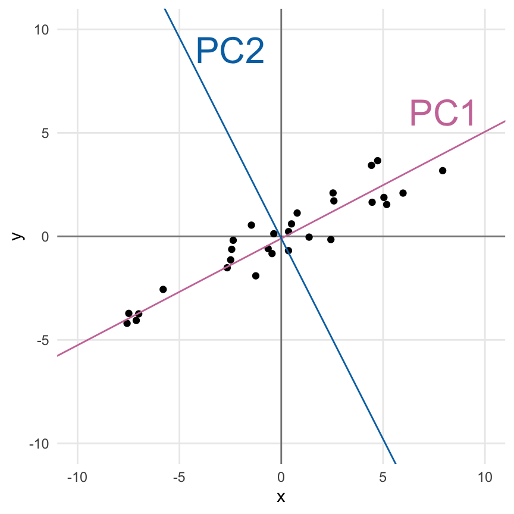
In der Abbildung 59.1 (b) sehen wir einmal dargestellt, was eine Hauptkomponentenanalyse erreichen will. Wir legen zuerst die 1. Hauptkomponente (PC1) so durch die Daten, dass die Varianz durch die 1. Hauptkomponente maximal minimiert wird. Dann berechnen wir die 2. Hauptkomponente (PC2) so, dass die 2. Hauptkomponente senkrecht auf der 1. Hauptkomponente steht. Wir reduzieren damit die Varianz maximal weiter. Denn nur durch den senkrechten Stand der zweiten Hauptkomponente auf der ersten Hauptkomponente, können wir maximal viel Varianz erklären. Da wir hier nur zwei Variablen haben, gibt es auch nur zwei Hauptkomponenten.
Mit zwei Variablen gibt es nur eine Möglichkeit, die 2. Hauptkomponente anzuordnen. Bei mehr als zwei Hauptkomponenten gebe es ja auch noch andere Drehungen der 2. Hauptkomponente die ebenfalls die Bedingung, das Lot zur 1. Hauptkomponente zu sein, erfüllen würde. Du kannst es als eine eine Drehung um die 1. Hauptkomponente als zentrale Achse sehen. Wir wählen die lotrechte Repräsentation der 2. Hauptkomponente, die am meisten Varianz erklärt, also die Abstände minimiert, die noch nicht durch die 1. Hauptkomponente minimiert wurden. Somit erklärt die 2. Hauptkomponente immer weniger Varianz als die 1. Hauptkomponente. Mit weiteren Hauptkomponenten würden wir dann immer so weiter machen, bis wir immer weniger Varianz erklären können.
Du kannst dir jetzt noch den theoretischen Hintergrund durchlesen oder aber den Teil überspringen und die dann gleich die Daten einmal anschauen. Dann geht es auch gleich weiter zu dem Teil der angewandten Hauptkomponentenanalyse.
59.1 Theoretischer Hintergrund
Soweit klingt es ja alles recht einleuchten mit der Hauptkomponentenanalyse. Wie aber kommt jetzt die Idee einer Geraden durch die Punktewolke mit Hauptkomponenten zusammen? Wie geht das mathematisch eigentlich? Da sieht es schon etwas komplizierter aus. Deshalb fangen wir wie immer einmal mit einem Datensatz an. Wir nehmen das Datenbeispiel aus der Abbildung 59.1 (a). In der folgenden Tablle siehst du einmal die ersten sieben Wertepaare für \(x\) und \(y\) der insgesamt dreißig Zeilen.
Wie haben wir die Daten gebaut? Wir haben uns folgendes Modell genommen. Die \(y\) Werte hängen von den \(x\) Werten wfolgt ab.
\[ y \sim 0 + 0.5 \cdot x + \epsilon; \; \epsilon \sim \mathcal{N}(0,1) \]
Das heißt, wir haben eine Steigung der Geraden \(\beta_x\) von \(0.5\). Unsere Punkte streuen mit einer Varianz von \(1\) um die Gerade. Wir wollen es nicht komplizierter machen als sowieso schon ist. Hier dann einmal die Implementierung in R. Das set.seed() nutzen wir um immer die gleichen Zahlen wiedergegeben zu bekommen. Wir ziehen die \(x\)-Werte aus einer Normalverteilung mit einem Mittelwert von 0 und einer Standardabweichung von 5.
set.seed(2045312)
tbl <- tibble(x = rnorm(30, 0, 5),
y = 0 + 0.5 * x + rnorm(30, 0, 1))Jetzt können wir einmal über die Funktion lm() die Koeffizienten der Geraden schätzen. Also wie ist den nun die Steigung und der Achsenabschnitt in den generierten Daten?
lm(y ~ x, tbl) %>%
coefficients() %>%
round(2)(Intercept) x
-0.1 0.5 Wir sehen, dass wir den y-Achsenabschnitt mit \(-0.1\) nicht ganz treffen, wohl aber die Steigung mit \(0.5\). Damit hätten wir die Information für die erste Gerade, was ja auch die 1. Hauptkomponente wäre. Nun müssten wir die Gerade finden, die senkrecht auf der geschätzten Geraden steht und durch den Nullpunkt läuft. Das könnten wir ausprobieren oder aber auch abschätzen. Problematisch wird das ganze, wenn wir mehr als zwei Variablen haben. Hier kommt uns aber die Varianz/Kovarianzmatrix \(\boldsymbol{\Sigma_x}\) zur Hilfe. In der Varianz/Kovarianzmatrix finden wir alle Informationen die wir brauchen und noch mehr.
Exkurs: Die Varianz/Kovarianzmatrix \(\boldsymbol{\Sigma_x}\)
Wenn du dich ein wenig mit Eigenwerten auskennst, dann weißt du, dass Eigenwerte immer auf einer Matrix berechnet werden. In unserem Fall werden die Eigenwerte der Hauptkomponeten auf der Varianz/Kovarianzmatrix der standardisierten Daten berechnet. Im Folgenden siehst du einmal die Varianz/Kovarianzmatrix \(\boldsymbol{\Sigma_x}\) für die Datenmatrix \(x\). Du musst dir vorstellen, dass jedes \(x_1\) bis \(x_n\) jeweils eine Spalte in deiner Datenmatrix \(\boldsymbol{x}\) entspricht, die wir in unser Modell für die Hauptkomponentenanalyse aufnehmen wollen.
\[ \boldsymbol{\Sigma_x} = \begin{pmatrix}\operatorname{Var}(x_1) & \operatorname{Cov}(x_1,x_2) & \cdots & \operatorname{Cov}(x_1,x_n) \\ \\ \operatorname{Cov}(x_2,x_1) & \operatorname{Var}(x_2) & \cdots & \operatorname{Cov}(x_2,x_n) \\ \\ \vdots & \vdots & \ddots & \vdots \\ \\ \operatorname{Cov}(x_n,x_1) & \operatorname{Cov}(x_n,x_2) & \cdots & \operatorname{Var}(x_n) \end{pmatrix} \]
Für den Fall von zwei Variablen \(x_1\) und \(x_2\) können wir die Idee der Kovarianz nochmal nachvollziehen. Später rechnen wir dann die Hauptkomponentenanalyse auf der großen Matrix, aber ich kann dir den Zusammenhang leider nur für zwei Variablen erklären, den zweidimensional kriege ich noch hin. Wir können mit folgender Formel die Kovarianzen zwischen den beiden Variablen \(x_1\) und \(x_2\) berechnen.
\[ \operatorname{Cov}(x_2,x_1) = \sum_{i=1}^n(x_{1i}-\bar{x_1})(x_{2i}-\bar{x_2}) \]
Nochmal als Erinnerung, die Formel berechnet die quadrierten Abweichung der Beobachtungen von \(x_1\) zum Mittelwert \(\bar{x}_1\) und somit die Varianz \(\operatorname{Var}(x_1)\) von \(x_1\).
\[ \operatorname{Var}(x_1) = \sum_{i=1}^n(x_{1i}-\bar{x}_1)^2 \]
Ebenso berechnet diese Formel die quadrierten Abweichung der Beobachtungen von \(x_2\) zum Mittelwert \(\bar{x}_2\) und damit die Varianz \(\operatorname{Var}(x_2)\) von \(x_2\).
\[ \operatorname{Var}(x_2) = \sum_{i=1}^n(x_{2i}-\bar{x}_2)^2 \]
Das Ganze ist natürlich sehr trocken. Deshalb füttern wir einmal die Variablen \(x_1\) und \(x_2\) mit echten Daten und erschaffen uns den Datensatz cov_tbl. In Tabelle 59.2 ist der Zusammenhang nochmal Schritt für Schritt aufgeschlüsselt wie sich die Zahlen grob berechnen. Ich habe ein, zwei Schritte ausgelassen, aber die ergänzt du fix selber.
cov_tbl <- tibble(x_1 = c(0.8, 1.0, 1.2, 1.9, 2.0, 2.7, 2.8),
x_2 = c(1.2, 1.8, 1.3, 1.7, 2.6, 1.8, 2.7))Dann können wir uns einmal den Mittelwert und die Varianz für die beiden Variablen \(x_1\) und \(x_2\) berechnen.
cov_tbl %>%
gather %>%
group_by(key) %>%
summarise(mean = mean(value), var = var(value))# A tibble: 2 × 3
key mean var
<chr> <dbl> <dbl>
1 x_1 1.77 0.642
2 x_2 1.87 0.339In der folgenden Abbildung 59.2 siehst du einmal die Konzepte der Varianz für \(x_1\) in Subplot A und \(x_2\) in Subplot B dargestellt. Die durchgezogene Linie stellt dabei den Mittelwert für die beiden Variablen dar. Die Varianz berechnet sich jetzt als der quadrierte Abstand von den Beobachtungen zu den Mittelwerten. Der Abstand ist als gestrichelte Linie dargestellt. Faktisch addierst du die sich ergebenden Quadrate auf. Bei der Kovarianz sind es keine Quadrate, sondern Rechtecke. Die berechnest nämlich einmal den Abstand einer Beobachtung zum Mittelwert von \(x_1\) und einmal den Abstand zum Mittelwert von \(x_2\). Die beiden Abstände \((x_{1i}-\bar{x_1})\) und \((x_{2i}-\bar{x_2})\) multiplizierst du und addierst dann diese Rechtecke auf.

In der folgenden Tabelle 59.2 siehst du dann das Vorgehen nochmal numerisch. Wichtig ist hierbei, dass wir am Ende die Varianz und die Kovarianz berechnen können indem wir die Summen \(\sum\) durch \(n-1\) gleich 6 teilen.
| \(\boldsymbol{x_1}\) | \(\boldsymbol{x_2}\) | \(\boldsymbol{(x_{2i}-\bar{x}_2)^2}\) | \(\boldsymbol{(x_{1i}-\bar{x}_1)^2}\) | \(\boldsymbol{(x_{1i}-\bar{x}_1)(x_{2i}-\bar{x}_2)}\) |
|---|---|---|---|---|
| 1.2 | 0.8 | 0.94 | 0.45 | 0.65 |
| 1.8 | 1.0 | 0.60 | 0.01 | 0.06 |
| 1.3 | 1.2 | 0.33 | 0.33 | 0.33 |
| 1.7 | 1.9 | 0.02 | 0.03 | -0.02 |
| 2.6 | 2.0 | 0.05 | 0.53 | 0.17 |
| 1.8 | 2.7 | 0.86 | 0.03 | -0.07 |
| 2.7 | 2.8 | 1.06 | 0.69 | 0.85 |
| \(\sum\) | 3.86 | 2.05 | 1.97 | |
| \(\cfrac{\sum}{n-1}\) | 0.64 | 0.34 | 0.33 |
Schauen wir mal, ob wir richtig gerechnet haben und die Varianz für \(x_1\) mit 0.64, die Varianz von \(x_2\) mit 0.34 sowie die Kovarianz von \(x_1\) und \(x_2\) auch R wiederfinden. Wir nutzen die Funktion cov() um uns die Varianz/Kovarianzmatrix wiedergeben zu lassen.
cov_tbl %>%
cov() %>%
round(2) x_1 x_2
x_1 0.64 0.33
x_2 0.33 0.34Wie wir sehen können wir die Werte in der Varianz/Kovarianzmatrix wiederfinden. Das ist ja mal ein Erfolg. Wir nutzen also die Varianz/Kovarianzmatrix als unsere Ähnlichkeitsmatrix, wie schon bei den Clusteranalysen, um hier unbekannte Zusammenhänge zwischen den Spalten und damit dann den Hauptkomponenten aufzuklären.
Erstmal wollen wir die Varianz/Kovarianzmatrix mit der Funktion cov() aus dem Datensatz berechnen. Wir runden hier ziemlich streng damit wir die Zahlen besser vergleichen können.
cov(tbl) %>%
round(1) x y
x 21.6 10.9
y 10.9 6.1Hier nochmal die Varianz/Kovarianzmatrix mathematisch aufgeschrieben. Auf der Diagonalen der Matrix findest du die Varianzen von \(x\) sowie von \(y\). Auf den Nebendiagonalen dann die Kovarianz von \(x\) und \(y\). Die Kovarianz beschriebt ja das Variieren von \(y\), wenn sich auch \(x\) ändert. Eine Kovarianz von 0 bedeutet damit dann auch, dass wir keine Steigung oder einen Trend in der Punktewolke sehen. Ändert sich \(x\) ändert sich \(y\) nicht, wir haben kein gemeinsames Variieren.
\[ \Sigma = \begin{pmatrix} \operatorname{Var}(x) & \operatorname{Cov}(x, y) \\ \operatorname{Cov}(x, y) & \operatorname{Var}(y) \end{pmatrix} = \begin{pmatrix} 21.6 & 10.9 \\ 10.9 & 6.1 \end{pmatrix} \]
Und jetzt kommt der eigentlich Kniff. Wir können aus der Kovarianzmatrix unser \(\beta_x\) berechnen. So einfach zwar nur, wenn wir zwei Variablen haben, aber das Prinzip ist auch bei mehr Variablen gegeben. Wenn wir die Kovarianz \(\operatorname{Cov}(x, y)\) durch die Varianz (x) von \(x\) teilen, erhalten wir die Steigung der Geraden.
\[ \beta_x = \cfrac{\operatorname{Cov}(x, y)}{\operatorname{Var}(x)} = \cfrac{10.9}{21.6} \approx 0.5 \]
Das heißt, dass wir in der Varianz/Kovarianzmatrix die Informationen über die Steigung der Geraden haben. Mehr noch, wenn wir mehrere Variablen haben, dann ist das Zusammenspiel der Variablen in der Varianz/Kovarianzmatrix verborgen. Schauen wir dazu nochmal die Abbildung 59.3 (a) an. Hier sehen wir, wie die 1. Hauptkomponente durch die Punktewolke läuft. Wie kriegen wir jetzt in Abbildung 59.3 (b) für die 2. Hauptkomponente die Koeffizienten der Gerade bestimmt? Hier kommt uns eine Eigenschaft einer Matrix und die Zerlegung der Matrix in ihre Eigenwerte und Eigenvektoren zu Hilfe.

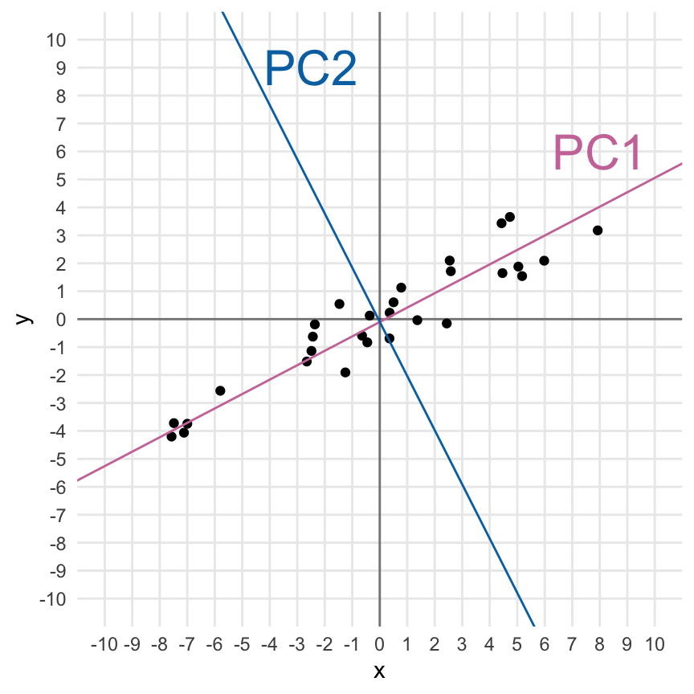
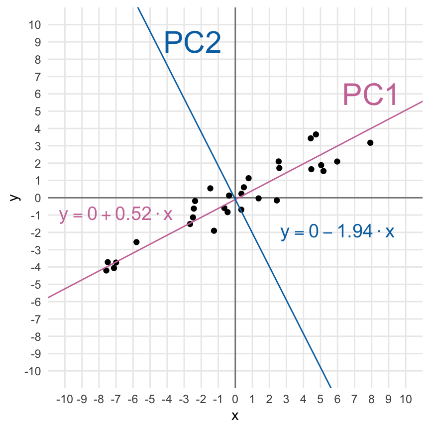
Folgende Funktion eigen() berechnet die Eigenwerte aus der Varianz/Kovarianzmatrix. Erstmal sieht das wieder realtiv wild aus und wir erkennen da noch nicht so richtig ein Muster. Eigenwerte und ihre Eigenvektoren sind nicht miteinander korreliert und stehen sozusagen orthogonal und damit senkrecht aufeinander. Das ist es was wir suchen!
eigen_res <- cov(tbl) %>%
eigen
eigen_reseigen() decomposition
$values
[1] 27.2356150 0.4907358
$vectors
[,1] [,2]
[1,] -0.8887583 0.4583762
[2,] -0.4583762 -0.8887583Wenn du jetzt die untere Zeile durch die obere Zeile der Eigenvektoren teilst, dann erhälst du zwei Zahlen.
eigen_res$vectors[2,] / eigen_res$vectors[1,][1] 0.515749 -1.938928Und wir sehen auch, dass wir in den Eigenwerten die Varianz wiederfinden. Wir hatten ja unsere \(x\)-Variable mit einer Standardabweichung von \(5\) erschaffen und unsere \(y\)-Variable um die Standardabweichung von \(1\) erhöht. Das finden wir dann auch hier wieder.
eigen_res$values %>% sqrt()[1] 5.2187752 0.7005254Die erste Zahl ist \(\beta_x\) extrem nahe und entspricht auch der Steigung der Geraden durch die Punktewolke. Die zweite Zahl ist die Steigung einer Geraden die orthogonal auf der ersten gerade steht und durch den Ursprung läuft. Wir haben damit die zweite Hauptkomponente gefunden.
Das Ganze auch mal mit der richtigen Funktion prcomp(), die das Ganze dann auch für mehr als zwei Dimensionen und Variablen kann. Hier siehst du auch warum es in der Funktion dann rotation heißt, es ist eben die Drehung der Hauptkomponenten untereinander. Auch finden wir hier in den Eigenwerten die Standardabweichungen wieder, die wir ursprünglich in der Generierung der Daten verwendet haben.
pca_res <- prcomp(tbl)
pca_resStandard deviations (1, .., p=2):
[1] 5.2187752 0.7005254
Rotation (n x k) = (2 x 2):
PC1 PC2
x 0.8887583 -0.4583762
y 0.4583762 0.8887583Auch hier können wir wieder die zweite Zeile durch die erste Zeile teilen und kriegen die Steigungen der Geraden aus der Abbildung 59.3 (b) wieder.
pca_res$rotation[2,] / pca_res$rotation[1,] PC1 PC2
0.515749 -1.938928 Ich habe dann mal die Geradengleichungen, die sich für die beiden Hauptkomponenten ergeben einmal zu der Abbildung 59.3 (c) ergänzt. Das funktioniert natürlich alles nur auf standardisierten Daten sonst ist ja auch der y-Achsenabschnitt nicht 0. Ja, es geht formal auch auf den nicht transformierten Daten, aber der Standard ist, die Daten zu standardisieren.
Diese Demonstration funktioniert nur mit zwei Variablen, da wir ja nur zweidimensionale Abbildungen erstellen können und zum anderen der Zusammenhang der Steigungen aus der Varianz/Kovarianzmatrix und den Eigenwerten dann gegeben ist. Das Prinzip bleibt aber das Gleiche. Wir nutzen die mathematischen Eigenschaften der Eigenwertzerlegung von Matrizen um uns orthogonale Geraden wiedergeben zu lassen.
Geht das etwas korrekter?
Ja, das war jetzt mathematisch teilweise unsauber. Aber darum geht es ja hier auch nicht - wir machen ja hier die Anwendung mit einem erweiterten Grundverständnis. Mathematisch besser geht natürlich in dem A Beginner’s Guide to Eigenvectors, Eigenvalues, PCA, Covariance and Entropy. Auch dem Rahmen ist das Tutorium Eigenvalues and Eigenvectors: Properties interessant. Am Ende noch ein Tutorium von Stackexchange Making sense of principal component analysis, eigenvectors & eigenvalues. Wie immer, du musst wissen wie tief du dann noch abtauchen willst.
Was machen wir jetzt also nochmal? Wir wollen unseren Daten, also die ganze Datenmatrix einmal so transformieren, dass wir neue Komponenten aus den Daten extrahieren, die die Daten auf einer anderen Dimension beschreiben. Im Prinzip handelt es sich also bei der Hauptkomponentenanalyse um eine komplexere Transformation der Daten. Wir nutzen dabei die Varianz/Kovarianzmatrix als unsere Distanzmatrix. Wird die gesamte Varianz der Daten vielleicht nur von wenigen Spalten verursacht? Dann brauchen wir ja nur diese wenigen Hauptkomponenten weiter betrachten. Wir nutzen also die Varianz/Kovarianzmatrix als unsere Ähnlichkeitsmatrix, wie schon bei den Clusteranalysen, um hier unbekannte Zusammenhänge zwischen den Spalten und damit dann Hauptkomponenten aufzuklären.
Hauptkomponente, Eigenwert und Varianz kurz zusammengefasst
In einer Hauptkomponentenanalyse ersetzen wir die ursprünglichen Spalten eines Datensatzes durch Hauptkomponenten. Die Hauptkomponenten haben so viele Dimensionen wie es Spalten im ursprünglichen Datensatz gibt. Jede Hauptkomponente hat einen Eigenwert (eng. eigenvalue), der den Anteil der erklärten Varianz der Hauptkomponente in den Daten beschreibt. Wir können die Beobachtungen oder Individuen (abk. ind) in den Zeilen betrachten oder aber die Variablen (abk. var) in den Spalten.
Neben der PCA existiert noch das Multidimensional Scaling (abk. MDS). Das MDS ist im Prinzip eine Spezialform der PCA. Im Unterschied zur PCA wird die MDS auf einer Distanzmatrix gerechnet. In einer MDS können wir nicht einfach so unsere Daten reinstecken sondern müssen zuerst die Daten in eine Distanzmatrix umrechnen. Dafür gibt es die Funktion dist() oder as.dist(), wenn wir schon Distanzen vorliegen haben. Daher ist die Anwendung einer MDS nicht besonders komplizierter.
Wenn wir eine PCA in R rechnen wollen, dann haben wir zuerst die Wahl zwischen den Funktionen prcomp() und princomp(). Laut der R-Hilfe hat die Funktion prcomp() eine etwas bessere numerische Genauigkeit. Daher ist die Funktion prcomp() gegenüber princomp() vorzuziehen. Es gibt aber noch eine neuere Implementierung der Funktionalität in dem R Paket FactoMineR und der Funktion PCA(). Da wir dann alles aus einer Hand haben nutzen wir in diesem Kapitel also das R Paket factoextra. Wir haben in dem Paket auch die die Funktionen um sich Faktoranalysen super anzuschauen und durchzuführen. Du kannst mehr auf der Webseite Factoextra R Package: Easy Multivariate Data Analyses and Elegant Visualization mehr über das Paket erfahren.
Es gibt eine natürlich große Anzahl an Quellen wie du in R eine PCA oder ein MDS durchführst. In der folgenden Box findest du eine Sammlung an Tutorien und R Code, der dir als Inspiration dienen mag. Ich werde Teile von den Tutorien in dem Kapitel hier adaptieren und verwenden, kann aber natürlich nichts alles nochmal nachkochen. Das ist ja auch nicht der Sinn hier.
Weitere Tutorien für die Principal Component Analysis
Wie immer gibt es eine Vielzahl an tollen Tutorien, die die PCA gut erklären. Ich habe hier einmal eine Auswahl zusammengestellt und du kannst dich da ja mal vertiefend mit beschäftigen, wenn du willst. Teile der Tutorien findest du vermutlich hier im Kapitel wieder.
Wir wollen uns jetzt die Hauptkomponentenanalyse an zwei Spieldaten anschauen. Eigentlich werden ja auch gerne Fragebögen mit der Hauptkomponentenanalyse ausgewertet, aber hier muss ich nochmal warten bis ich ein gutes Beispiel in den Beratungen hatte. Dann ergänze ich natürlich ein Beispiel für die Auswertung eines Fragebogen mittels Hauptkomponentenanalyse beim Skript zu den Beispielhaften Auswertungen.
59.2 Genutzte R Pakete
Wir wollen folgende R Pakete in diesem Kapitel nutzen.
pacman::p_load(tidyverse, magrittr, readxl, patchwork,
factoextra, FactoMineR, ggpubr, MASS, mda,
janitor, corrplot, HDclassif, klaR, see,
conflicted)
conflict_prefer("select", "dplyr")
conflict_prefer("filter", "dplyr")
conflict_prefer("mutate", "dplyr")
conflicts_prefer(magrittr::set_names)
conflicts_prefer(dlookr::transform)Am Ende des Kapitels findest du nochmal den gesamten R Code in einem Rutsch zum selber durchführen oder aber kopieren.
59.3 Daten
Wenn wir jetzt die Hauptkomponentenanalyse rechnen wollen, dann brauchen wir auch Datenbeispiele. Ich habe jetzt zwei sehr eingängige Beispiele gewählt, die du nicht so stark inhaltlich durchdringen musst. Es geht um die Unterschiede von Tieren und deren Eigenschaften. Die Datenbeispiele sind so gewählt, dass du das Konzept hinter der Hauptkomponentenanalyse verstehst und nicht so sehr nach der direkten Anwendbarkeit. Danach schauen wir uns noch an, warum wir die Daten standardisieren müssen und wie wir mit dem data.frame()-Problem umgehen. Wir können leider keine tibble() in der Hauptkomponentenanalyse nutzen.
59.3.1 Zwei Beispieldatensätze
Beginnen wir mit einem normierten Datensatz aus dem R Paket cluster. Der Datensatz animals wurde von mir noch mit ein paar Tieren ergänzt und schaut sich sechs Eigenschaften von 23 Tieren an. Wir wollen im Folgenden nun herausfinden, ob wir anhand der Eigenschaften in den Spalten die Tiere in den Zeilen in Gruppen einordnen können. Einige der Tiere sind ja näher miteinander verwandt als andere Tiere. Die ursprünglichen Daten liefen noch auf einem \(1/2\)-System, das ändern wir dann zu \(0/1\) damit wir dann auch besser mit den Daten arbeiten können. Für die Algorithmen ist es egal, aber ich habe lieber \(1\) gleich ja und \(0\) gleich nein.
animals_tbl <- read_excel("data/cluster_animal.xlsx", sheet = 1) %>%
clean_names() %>%
mutate(across(where(is.numeric), \(x) x - 1))Schauen wir uns einmal den Datensatz in der Tabelle 59.3 an. Wir sehen, dass wir noch einige fehlende Werte in den Daten vorliegen haben. Das ist manchmal ein Problem, deshalb werden wir im Laufe der Analyse die NA Werte mit na.omit() entfernen.
| animal | warm_blooded | fly | vertebrate | threatened | live_in_groups | hair |
|---|---|---|---|---|---|---|
| ant | 0 | 0 | 0 | 0 | 1 | 0 |
| bee | 0 | 1 | 0 | 0 | 1 | 1 |
| cat | 1 | 0 | 1 | 0 | 0 | 1 |
| centipede | 0 | 0 | 0 | 0 | 0 | 1 |
| chimpanzee | 1 | 0 | 1 | 1 | 1 | 1 |
| cow | 1 | 0 | 1 | 0 | 1 | 1 |
| dolphin | 1 | 0 | 1 | 1 | 1 | 0 |
| duck | 1 | 1 | 1 | 0 | 1 | 0 |
| eagle | 1 | 1 | 1 | 1 | 0 | 0 |
| earthworm | 0 | 0 | 0 | 0 | 0 | 0 |
| elephant | 1 | 0 | 1 | 1 | 1 | 0 |
| fly | 0 | 1 | 0 | 0 | 0 | 0 |
| frog | 0 | 0 | 1 | 1 | NA | 0 |
| herring | 0 | 0 | 1 | 0 | 1 | 0 |
| horse | 1 | 0 | 1 | 0 | 1 | 1 |
| human | 1 | 0 | 1 | 1 | 1 | 1 |
| lion | 1 | 0 | 1 | NA | 1 | 1 |
| lizard | 0 | 0 | 1 | 0 | 0 | 0 |
| lobster | 0 | 0 | 0 | 0 | NA | 0 |
| rabbit | 1 | 0 | 1 | 0 | 1 | 1 |
| salmon | 0 | 0 | 1 | 0 | NA | 0 |
| spider | 0 | 0 | 0 | NA | 0 | 1 |
| whale | 1 | 0 | 1 | 1 | 1 | 0 |
Der Tierdatensatz ist schön, da wir es hier nur mit 0/1 Werten zu tun haben. Wir werden später in dem preprocessing der Daten sehen, dass wir alle Spalten in der gleichen Spannweite der Werte wollen. Das klingt immer etwas kryptisch, aber der nächste Datensatz über verschiedene Kreaturen macht es deutlicher.
Eine andere Art die Daten zu Gruppieren kannst du im Tutorium Clustering Creatures nochmal nachvollziehen.
Im Folgenen einmal der Datensatz, den wir dann in der gleichen Exceldatei finden nur eben auf dem zweiten Tabellenblatt. Wir reinigen noch die Namen und setzen die creature-Spalte auf Klein geschrieben. Wie du siehst, haben wir dann nur 15 Kreaturen und drei Spalten mit dem Gewicht, der Herzrate und dem maximalen möglichen Alter.
creature_tbl <- read_excel("data/cluster_animal.xlsx", sheet = 2) %>%
clean_names() %>%
mutate(creature = tolower(creature))In der Tabelle 59.4 sehen wir nochmal die Daten dargestellt und hier erkennst du auch gut, wo das Problem liegt. Die Masse der Tiere reicht von \(6g\) beim Hamster bis \(120000000g\) beim Wal. Diese Spannweiten in einer Spalte und zwischen den Spalten führt dann zu Problemen bei den Algorithmen. Deshalb müssen wir hier Daten nochmal normalisieren oder aber standardisieren. Je nachdem was da besser passt.
| creature | mass_grams | heart_rate_bpm | longevity_years |
|---|---|---|---|
| human | 9.0e+04 | 60 | 70 |
| cat | 2.0e+03 | 150 | 15 |
| small dog | 2.0e+03 | 100 | 10 |
| medium dog | 5.0e+03 | 90 | 15 |
| large dog | 8.0e+03 | 75 | 17 |
| hamster | 6.0e+01 | 450 | 3 |
| chicken | 1.5e+03 | 275 | 15 |
| monkey | 5.0e+03 | 190 | 15 |
| horse | 1.2e+06 | 44 | 40 |
| cow | 8.0e+05 | 65 | 22 |
| pig | 1.5e+05 | 70 | 25 |
| rabbit | 1.0e+03 | 205 | 9 |
| elephant | 5.0e+06 | 30 | 70 |
| giraffe | 9.0e+05 | 65 | 20 |
| large whale | 1.2e+08 | 20 | 80 |
59.3.2 Standardisieren
Die Standardisierung zwingt Variablen in eine \(\mathcal{N(0,1)}\) Standardnormalverteilung. Das heißt, wir transformieren alle Variablen auf einen Mittelwert von \(0\) und einer Standardabweichung von \(1\). Hier nochmal die Formel für die Standardisierung oder auch \(z\)-Transformation. Achtung, wir müssen unsere Daten standatdisieren, damit wir auf jeden Fall die Graden durch den Ursprung zeichnen können. Wir kriegen ja bei der Eigenwertzerlegung und der Hauptkomponentenanalyse nur die Stiegungen wieder und damit muss alles auf den Ursprung normiert werden.
\[ z = \cfrac{x_i - \bar{x}}{s_x} \]
Wie wir hier sehen ziehen wir von jeder \(i\)-ten Beobachtung den Mittlwert von allen Beobachtungen ab. Dann teilen wir noch durch die Standardabweichung alle Beobachtungen. Am Ende ist dann damit unser Mittelwert auf \(0\) und unsere Standardabweichung auf \(1\). Unsere Daten haben damit den Schwerpunkt bei der \(0\) und unsere Geraden der Hauptkomponentenanalyse laufen immer durch den Ursprung.
Die Standardisierung macht dann auch die Daten sehr schon gleichförmig. Hier nutzen wir auch die Funktion transform() aus dem R Paket dlookr mit der Option zscore. Damit wir auch auf jeden Fall sicher gehen, dass wir die richtige Funktion nutzen, schreiben wir dlookr::transform() und damit ist sichergestellt, dass wir auch die Funktion transform() aus dem R Paket dlookr nutzen.
std_creature_tbl <- creature_tbl %>%
mutate(mass_grams = dlookr::transform(mass_grams, "zscore"),
heart_rate_bpm = dlookr::transform(heart_rate_bpm, "zscore"),
longevity_years = dlookr::transform(longevity_years, "zscore"))
std_creature_tbl# A tibble: 15 × 4
creature mass_grams heart_rate_bpm longevity_years
<chr> <transfrm> <transfrm> <transfrm>
1 human -0.2739558 -0.5739180 1.6794647
2 cat -0.2768074 0.2094888 -0.5409814
3 small dog -0.2768074 -0.2257372 -0.7428402
4 medium dog -0.2767102 -0.3127824 -0.5409814
5 large dog -0.2766129 -0.4433502 -0.4602379
6 hamster -0.2768702 2.8208449 -1.0254424
7 chicken -0.2768236 1.2975538 -0.5409814
8 monkey -0.2767102 0.5576696 -0.5409814
9 horse -0.2379870 -0.7131904 0.4683123
10 cow -0.2509487 -0.5303954 -0.2583792
11 pig -0.2720115 -0.4868728 -0.1372639
12 rabbit -0.2768398 0.6882374 -0.7832119
13 elephant -0.1148507 -0.8350536 1.6794647
14 giraffe -0.2477083 -0.5303954 -0.3391227
15 large whale 3.6116436 -0.9220988 2.0831822 Die Funktion PCA(), die wir im Folgenden verwenden wollen, wird zwar auch die Daten intern von sich aus standardisieren, wenn die nicht standardisiert wurden. Ich mag es aber nicht, wenn wichtige Schritte in Funktionen begraben werden, deshalb hier nochmal das Beispiel, wie man es macht. Doppelt Standardisieren tut aber nicht weh, schon standardiserte Daten ändern sich nicht durch eine weitere Standardisierung.
59.3.3 Das data.frame() Problem
Leider ist es so, dass fast alle Pakete im Kontext der Hauptkomponentenanalyse mit den Zeilennamen bzw. row.names() eines data.frame() arbeiten. Das hat den Grund, dass wir gut das Label in den Zeilennamen parken können, ohne das uns eine Spalte in den Auswertungen stört. Meistens ist das Label ja ein character und soll gar nicht in die Hauptkomponentenanalyse mit rein. Deshalb müssen wir hier einmal unsere tibble() in einen data.frame() umwandeln. Die tibble() haben aus gutem Grund keine Zeilennamen, die Zeilennamen sind ein Ärgernis und Quelle von Fehlern und aus gutem Grund nicht in einem tibble() drin. Hier brauchen wir die Zeilennamen aber.
Wir bauen uns also einmal einen data.frame() für unseren Tierdatensatz und setzen die Tiernamen als Zeilennamen bzw. row.names(). Wir entfernen dann auch noch schnell alle fehlenden Werte, denn wir wollen uns hier nicht noch mit der Imputation von fehlenden Werten beschäftigen.
animals_df <- animals_tbl %>%
na.omit() %>%
as.data.frame() %>%
set_rownames(.$animal) %>%
select(-animal)Das Ganze machen wir dann auch noch einmal für die normalisierten Kreaturendaten. Wir wollen dann ja nur auf den normalisierten Daten weitermachen.
std_creature_df <- std_creature_tbl %>%
as.data.frame() %>%
set_rownames(.$creature) %>%
select(-creature)59.4 Hauptkomponentenanalyse
Jetzt haben wir uns mit sehr viel Theorie beschäftigt und deshalb nochmal in der Abbildung 59.4 ein schematischer Überblick über den Ablauf der Hauptkomponentenanalyse. Wir nutzen die Daten und berechnen für die Daten die Varianz/Kovarianzmatrix. Auf der Varianz/Kovarianzmatrix rechnen wir dann die Hauptkomponentenanalyse. Beide Schritte sind intern in den Funktionen in R implementiert. Du musst nur auf die Daten achten. Dann können wir uns die Hauptkomponenten und die Eigenwerte als Korrealtionsplot anschauen und die Aussagekraft der Variablen sehen.

fly werden nochmal die Koordinaten deutlich.Es gibt viele Implementierungen der Hauptkomponentenanalyse in R. Wir nutzen die Funktion PCA() aus dem R Paket FactoMineR für die Analyse von kontinuierlichen Variablen. Denk immer daran, es kann maximal nur so viele Hauptkomponenten geben, wie wir auch Spalten in den Daten vorliegen haben. Folgende wichtige Funktionen werden wir jetzt einmal nutzen. Es gibt noch mehr, aber das übersteigt die einfache Hauptkomponentenanalyse, die wir uns hier anschauen wollen.
Die zentrale Funktion ist aber die Funktion PCA() womit wir die eigentliche Hauptkomponentenanalyse erstmal durchführen, wenn kontinuierliche Variablen vorliegen. Die Funktion nimmt die Daten und berechnet dann intern die Varianz/Kovarianzmatrix. Die Varianz/Kovarianzmatrix wird dann als Distanzmatrix genutzt um die Hauptkomponenten und deren Eigenwerte zu berechnen.
Neben der Funktion PCA() aus dem R Paket FactoMineR für die Analyse von kontinuierlichen Variablen gibt es noch eine Reihe anderer Funktionen für eine Hauptkomponentenanalyse wenn wir kategoriale Variablen oder eine Mischung vorliegen haben. Hier mal die vollständige Liste.
- PCA - Principal Component Analysis, zur Analyse eines Datensatzes mit kontinuierlichen Variablen
- CA - Correspondence Analysis (Korrespondenzanalyse), für die Analyse der Assoziation zwischen zwei kategorialen Variablen.
- MCA - Multiple Correspondence Analysis, für die Analyse eines Datensatzes mit kategorialen Variablen.
- FAMD - Factor Analysis of Mixed Data (Faktorenanalyse gemischter Daten), für die Analyse eines Datensatzes, der sowohl kontinuierliche als auch kategoriale Variablen enthält.
- MFA - Multiple Factor Analysis, für die Analyse eines Datensatzes, der in Gruppen strukturierte Variablen enthält.
59.4.1 PCA - Principal Component Analysis
Bei der Nutzung der Funktion PCA() ist für mich wichtig, dass wir nicht gleich irgendwelche Abbildungen erhalten, deshalb ist hier im Skript graph = FALSE gewählt. Mit der Option scale.unit = TRUE musst du die Daten selber nicht standardisieren sondern die Funktion PCA() macht das für dich. Manchmal sind Fragebögen sehr groß mit mehr als Dutzenden von Fragen, da macht es Sinn sich nicht die Anzahl an Fragen als Hauptkomponenten wiedergeben zu lassen. Die Option ncp = 5 zum Beispiel schränkt hier die Anzahl auf 5 Hauptkomponenten ein. Bei den Kreaturen macht es keinen Sinn, da erhalten wir natürlich nur drei Hauptkomponenten, da wir nur drei Spalten in dem Datensatz haben.
pca_animals <- PCA(animals_df, scale.unit = TRUE,
ncp = 5, graph = FALSE)pca_creature <- PCA(std_creature_df, scale.unit = TRUE,
ncp = 5, graph = FALSE)Folgende Funktionen sind wichtig um die klassische Hauptkomponentenanalyse einmal zu visualisieren und zu bewerten. Die Namen folgen alle einem Schema im Paket FactoMineR, so dass wir hier nur Kleinigkeiten im Namen ändern müssen um alle Funktionen zu nutzen.
get_pca_ind(),get_pca_var(): Extrahiert die Ergebnisse für Individuen bzw. Variablen.fviz_pca_ind(),fviz_pca_var(): Visualisierung der Ergebnisse für Individuen bzw. Variablen.fviz_pca_biplot(): Erstellt einen Biplot der Individuen und Variablen.
59.4.2 CA - Correspondence Analysis
Spezialfall des \(\mathcal{X}^2\)-Test
Die CA-Analyse funktioniert nur auf einer \(n \times k\) Tabelle. Daher können wir nur zwei Variablen mit Kategorien miteinander in Verbindung setzen. Eigentlich sehen wir hier eher einen großen \(\mathcal{X}^2\)-Test. Deshalb gehe ich aktuell nicht auf die Lösung hier tiefer ein.
Wir nutzen die Correspondence Analysis zur Analyse des Zusammenhangs zwischen zwei kategorialen Variablen. Also eher ein großer \(\mathcal{X}^2\)-Test mit anderen Mitteln auf einer \(n \times k\) Tabelle.
CA(tbl, ncp = 5, graph = FALSE)Wir erhalten alle wichtigen Informationen aus einer Correspondence Analysis mit den folgenden Funktionen.
get_ca_row(),get_ca_col(): Extrahiert die Ergebnisse für Zeilen bzw. Spalten.fviz_ca_row(),fviz_ca_col(): Visualisierung der Ergebnisse für Zeilen bzw. Spalten.fviz_ca_biplot(): Erstellt einen Biplot der Individuen und Variablen.
Wir betrachteten den Fall hier nicht weiter, da er wirklich sehr speziell ist und nur selten vorkommt.
59.4.3 MCA - Multiple Correspondence Analysis
Wir nutzen die Multiple Correspondence Analysis für die Analyse eines Datensatzes mit kategorialen Variablen.
MCA(tbl, ncp = 5, graph = FALSE)Wir erhalten dann wiederum alle wichtigen Informationen und Abbildungen über folgende Funktionen.
get_mca_ind(),get_mca_var(): Extrahiert die Ergebnisse für Individuen bzw. Variablen.fviz_mca_ind(),fviz_mca_var(): Visualisierung der Ergebnisse für Individuen bzw. Variablen.fviz_mca_biplot(): Erstellt einen Biplot der Individuen und Variablen.
59.4.4 FAMD - Factor Analysis of Mixed Data
Für die Analyse eines Datensatzes, der sowohl kontinuierlichen Variablen als auch kategorialen Variablen enthält nutzen wir die Factor Analysis of Mixed Data.
FAMD(tbl, ncp = 5, graph = FALSE)Auch hier haben wir die wichtigen Funktionen für die Darstellung einmal dargestellt.
get_famd_ind(),get_famd_var(): Extrahiert die Ergebnisse für Individuen bzw. Variablen.fviz_famd_ind(),fviz_famd_var(): Visualisierung der Ergebnisse für Individuen bzw. Variablen.
59.4.5 MFA - Multiple Factor Analysis
Komplexer wird es, wenn wir eine Multiple Factor Analysis durchführen wollen. In diesem Fall ist es die Analyse eines Datensatzes, der in Gruppen strukturierte Variablen enthält.
MCA(X, ncp = 5, graph = FALSE)Auch gibt es bei der Multiple Factor Analysis ein Set an Funktionen, die wir hauptsählcihc benötigen.
get_mfa_ind(),get_mfa_var(): Extrahiert die Ergebnisse für Individuen bzw. Variablen.fviz_mfa_ind(),fviz_mfa_var(): Visualisierung der Ergebnisse für Individuen bzw. Variablen.
Weitere Funktionen finden sich dann noch auf der Tutoriumsseite zu der MFA - Multiple Factor Analysis.
59.5 Darstellung der Ergebnisse
Im Folgenden betrachten wir dann die Hauptkomponentenanalyse auf drei Ebenen. Wir konzentrieren uns hier erstmal nur auf die Beispiele aus der Funktion PCA(). Prinzipiell sind die Analysen für die anderen Funktionen ähnlich und die Interpretation unterscheidet sich nur leicht.
- Auf der Ebene der Eigenwerte: Wir entscheiden, wie viele Hauptkomponenten wir eigentlich in die weitere Analyse nehmen wollen.
- Auf der Ebene der Variablen: Wir betrachten die Spalten und schauen wie sich die Spalten zueinander und den Beobachtungen verhalten. In der R Welt enden dann die Funktionen
*_var. - Auf der Eben der Individuen: Wir schauen uns einmal die Zeilen an und versuchen zu verstehen, wie sich die einzelenen Beobachtungen oder Individuen verhalten. Gibt es hier Auffälligkeiten? In der R Welt enden dann die Funktionen
*_ind.
59.5.1 Ebene der Eigenwerte
Die Eigenwerte messen die Menge der von jeder Hauptkomponente beibehaltenen Variation. Damit repräsentieren die Eigenwerte die Varianz/Kovarianzmatrix der Daten. Die Eigenwerte sind für die ersten Hauptkomponenten grundsätzlich groß und für die nachfolgenden Hauptkomponente immer kleiner. Das heißt, die ersten Hauptkomponente beschreiben Variablen mit der größten Variation im Datensatz. Wie schon gesagt, wir erschaffen neue Variablen aus den Daten, die wir Hauptkomponenten nennen. Jede Hauptkomponente hat einen Eigenwert, der beschreibt, wie viel Varianz die Hauptkomponente in den Daten erklären kann.
Mit Hilfe der Eigenwerte lässt sich die Anzahl der Hauptkomponenten bzw. Dimensionen bestimmen, die nach der PCA beibehalten werden sollen. Wir wollen selten alle Hauptkomponenten berücksichtigen. Es geht hier ja auch darum die Dimensionen der Daten zu reduzieren. Wenn wir alle Hauptkomponenten weiterverwenden würden, dann könnten wir auch den ursprünglichen Datensatz nutzen. Die Eigenwerte und der Anteil der Varianzen, die von den Hauptkomponenten beibehalten werden, können mit folgenden Funktionen extrahiert werden.
get_eigenvalue(): Extrahiert die Eigenwerte/Varianzen der Hauptkomponentenfviz_eig(): Visualisierung der Eigenwerte
Dabei bedeutet ein Eigenwert > 1, dass die Hauptkomponenten mehr Varianz erklären als eine der ursprünglichen Variablen in den standardisierten Daten. Dies wird üblicherweise als Grenzwert für die Beibehaltung der Hauptkomponenten verwendet. Dies trifft nur zu, wenn die Daten standardisiert sind.
eig_animals <- get_eigenvalue(pca_animals) %>%
as_tibble()
eig_animals # A tibble: 6 × 3
eigenvalue variance.percent cumulative.variance.percent
<dbl> <dbl> <dbl>
1 2.54 42.3 42.3
2 1.24 20.6 62.9
3 0.848 14.1 77.1
4 0.723 12.1 89.1
5 0.515 8.58 97.7
6 0.137 2.29 100 Die Summe aller Eigenwerte für die Tiere ergibt eine Gesamtvarianz von 6. Jetzt können wir ganz einfach den Anteil der erklärten Varianz von jedem Eigenwert berechnen. In der zweiten Spalte finden wir dann die Werte der Eigenwerte geteilt durch die Gesamtvarianz. Daher ist \(42.35\) gleich \(2.54\) geteilt durch \(6\). Der kumulative Prozentsatz der erklärten Variation wird durch Addition der aufeinander folgenden Anteile der erklärten Variation ermittelt.
eig_creature <- get_eigenvalue(pca_creature) %>%
as_tibble()
eig_creature# A tibble: 3 × 3
eigenvalue variance.percent cumulative.variance.percent
<dbl> <dbl> <dbl>
1 1.99 66.2 66.2
2 0.730 24.3 90.5
3 0.285 9.49 100 Die Summe aller Eigenwerte für die Kreaturen ergibt eine Gesamtvarianz von 3. Damit können wir dann auch einfach die anderen Werte in den Spalten nachvollziehen.
Jetzt stellt sich natürlich die Frage, wie viele der Hauptkomponenten sollen den jetzt zukünftig berücksichtigt werden? Leider gibt es keine allgemein anerkannte objektive Methode, um zu entscheiden, wie viele Hauptkomponenten ausreichend sind. Dies hängt von dem jeweiligen Anwendungsbereich und dem jeweiligen Datensatz ab. In der Praxis neigen wir dazu, die ersten paar Hauptkomponenten zu betrachten, um interessante Muster in den Daten zu finden. Dafür nutzen wir den Scree Plot und entscheiden anhand der Beuge in dem Plot. Wenn wir nur wenige Variablen in den Daten haben, dann kann es sein, dass wir nur wenige Hauptkomponenten raus schmeißen. In der Abbildung 59.5 siehst du einmal die beiden Scree Plots für die beiden Datensätze.
fviz_eig(pca_animals, addlabels = TRUE)
fviz_eig(pca_creature, addlabels = TRUE)
animals_df
std_creature_dfWir sehen für die Tierdaten, dass die erste Hauptkomponente gut 42% der Varianz in den Daten erklärt, die folgende Hauptkomponente dann nur noch 20% und so weiter. Hier sehen wir dann auch die Beuge und könnten schließen, dass die ersten beiden Hauptkomponenten ausreichen um den Datensatz zu beschreiben. Bei den Kreaturendaten sieht es so aus, als ob wir die Datan alleinig mit der ersten Hauptkomponente erklären könnten. Wir sehen ja, dass gut 62% der Varianz durch die erste Hauptkomponente erklärt wird.
59.5.2 Ebene der Variablen
get_*_var() für andere Funktionen aus FactoMineR
Du kannst einfach das * in get_*_var() durch den klein geschriebenen Funktionaufruf von MCA, FAMD und MFA ersetzen um dir dann auch die Ergebnisse analog zu der PCA herausgeben zu lassen. Die Interpretation ist ähnlich bis gleich.
Schauen wir jetzt einmal die Informationen der Variablen also Spalten der Hauptkomponentenanalyse an. Wir erhalten jetzt also die Informationen zu den einzelnen Hauptkomponenten, die ja die Variablen bzw. Spalten der Daten repräsentieren. Wir erhalten die Informationen über die Funktion get_pca_var().
var_animals <- get_pca_var(pca_animals)
var_creature <- get_pca_var(pca_creature)
var_creaturePrincipal Component Analysis Results for variables
===================================================
Name Description
1 "$coord" "Coordinates for the variables"
2 "$cor" "Correlations between variables and dimensions"
3 "$cos2" "Cos2 for the variables"
4 "$contrib" "contributions of the variables" Schauen wir uns einmal an was wir mit den Informationen über die Variablen durch die Funktion get_pca_var() machen können.
coord: Koordinaten der Variablen zur Erstellung eines Streudiagramms. Wir nutzen meistens nur die ersten beiden Hauptkomponenten, da wir sonst kein zweidimensionalen Scatterplot machen können.cor: Die Korrelation zwischen den ursprünglichen Variablenwerten in den Zeilen und den neuen Hauptkomponenten in den Spalten.cos2: stellt die Qualität der Darstellung der Variablen auf der Faktorkarte dar. Es wird berechnet als die quadrierten Koordinaten:cos2 = coord * coordcontrib:enthält die Beiträge (in Prozent) der Variablen zu den Hauptkomponenten. Der Beitrag einer Variablen zu einer bestimmten Hauptkomponente ist (in Prozent): (cos2* 100) / (gesamtercos2der Komponente).
Im Folgenden bewerten wir die Qualität einer Variable nach den cos2-Werten oder ihren Beitragswerten zu den Hauptkomponenten dargestellt durch die contrib-Werte. Wir nutzen hier jetzt aber erstmal die cos2-Werte, weil sonst hier alles an Abbildungen explodiert.
- Ein hoher cos2-Wert deutet auf eine gute Darstellung der Variablen auf der Hauptkomponente hin. In diesem Fall ist die Variable nahe am Umfang des Korrelationskreises positioniert.
- Ein niedriger cos2-Wert zeigt an, dass die Variable nicht perfekt durch die PC’s repräsentiert ist. In diesem Fall befindet sich die Variable in der Nähe der Kreismitte.
- Für eine bestimmte Variable ist die Summe des cos2 aller Hauptkomponenten gleich eins.
In der Abbildung 59.6 sehen wir einmal die Zusammenhänge von den cos2-Werten und den jeweiligen Hauptkomponenten. Wir setzen is.corr = FALSE, weil wir keine Korrelation abbiden wollen sondern cos2-Werte.
corrplot(var_animals$cos2, is.corr = FALSE)
corrplot(var_creature$cos2, is.corr = FALSE)
animals_df
std_creature_dfcos2-Werten und den jeweiligen HauptkomponentenWir sehen bei den Tierdaten, dass die die erste Hauptkomponente Dim.1 die Variablen warm_blooded, vertebrate und etwas weniger threatened und live_in_groups beschreibt. Die zweite Hauptkomponente Dim.2 repräsentiert die Variable hair. Die dritte Hauptkomponente deckt fly ab. Die vierte Hauptkomponente beschreibt dann live_groups etwas stärker als die erste Hauptkomponente. Die fünfte Hauptkomponente können wir fast ignorieren. Bei den Kreaturendaten sehen wir das die erste Hauptkomponente fast alle Variablen repräsentiert. Die zweite Hauptkomponente beschreibt dann noch etwas mass_grams und heart_rate_bpm.
In der Abbildung 59.7 sehen wir die gleichen Informationen nochmal als Säulendiagramm dargestellt. Hier ist es eventuell numerisch schöner und besser zu sehen, wie sich die cos2-Werte für die erste und zweite Hauptkomponente verhalten. Du musst hier nämlich entscheiden, wie viele Hauptkomponenten du zusammen betrachten willst. Hier habe ich über axes = 1:2 die ersten beiden Hauptkomponenten gewählt.
fviz_cos2(pca_animals, choice = "var", axes = 1:2)
fviz_cos2(pca_creature, choice = "var", axes = 1:2)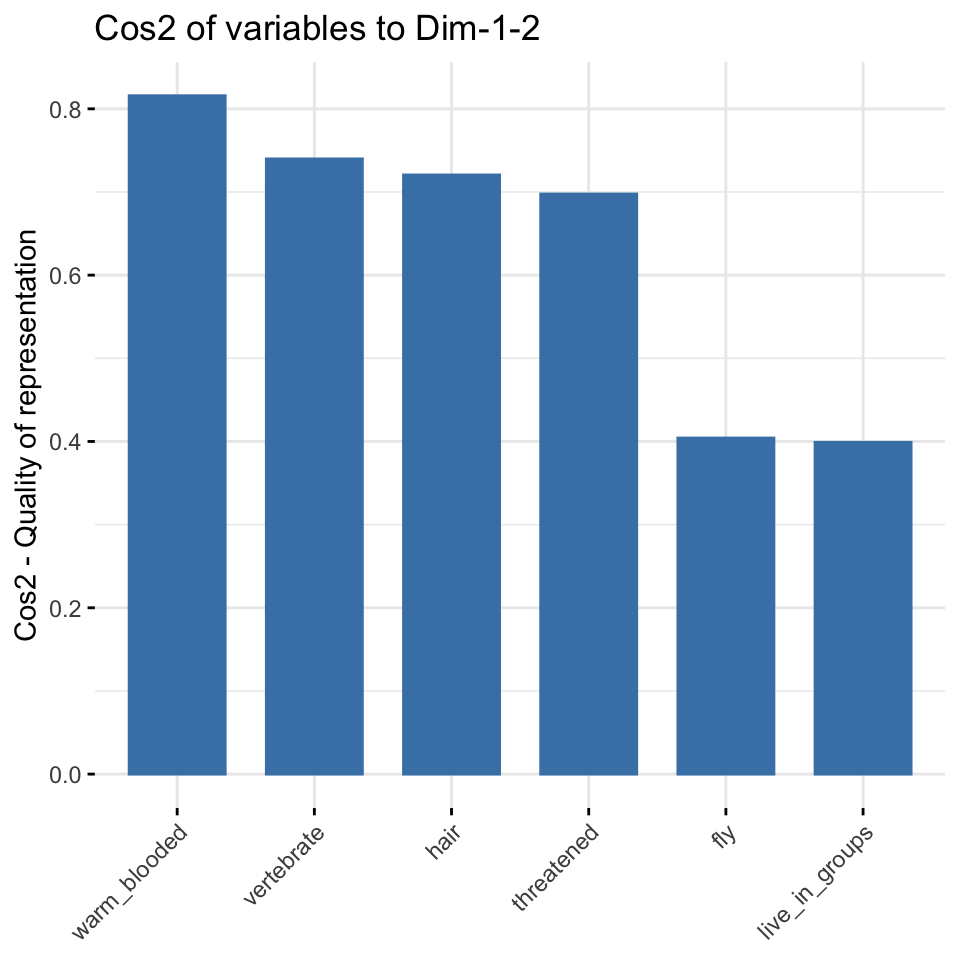
animals_df
std_creature_dfcos2-Werten und die ersten beiden Hauptkomponenten Dim.1 und Dim.2.Als nächstes wollen wir uns dann mal die ersten beiden Hauptkomponenten Dim.1 und Dim.2 in einer Abbildung anschauen. In der Abbildung 59.8 sehen wir das Korrelationsdiagramm der Variablen für die ersten beiden Hauptkomponenten. Über die Option axes = kannst du dir auch andere Kombinationen von zwei Hauptkomponenten anschauen. Das Korrelationsdiagramm zeigt die Beziehungen zwischen allen Variablen und kann wie folgt interpretiert werden:
- Positiv korrelierte Variablen sind zusammen gruppiert.
- Negativ korrelierte Variablen befinden sich auf gegenüberliegenden Seiten des Ursprungs der Grafik oder auch den gegenüberliegende Quadranten.
- Der Abstand zwischen den Variablen und dem Ursprung misst die Qualität der Variablen im Bezug auf den erklärenden Anteil. Variablen, die vom Ursprung entfernt sind, sind bedeutender als Variablen nahe des Ursprungs.
Wenn eine Variable nur durch zwei Hauptkomponenten, also zum Beispiel die Dim.1 und die Dim., perfekt repräsentiert wird, ist die Summe des cos2 von diesen beiden Hauptkomponenten gleich eins. In diesem Fall werden die Variablen auf dem Korrelationskreis positioniert und der Pfeil geht damit vom Ursprung direkt zum Kreis. In Abbildung 59.8 (b) sind die Variablen heart_rate_bpm und mass_grams direkt auf dem Korrelationskreis. Daher sind diese beiden Variablen erklärend für einen Großteil der Varianz in den Daten. Für einige der Variablen sind möglicherweise mehr als 2 Komponenten erforderlich, um die Daten perfekt zu repräsentieren. In diesem Fall werden die Variablen innerhalb des Korrelationskreises positioniert, was wir eher in der Abbildung 59.8 (a) sehen. Variablen nahe des Zentrum haben keine Bedeutung für die beiden Hauptkomponenten. Je nach betrachteten Hauptkomponentenpaar kann es natürlich wieder anders aussehen.
fviz_pca_var(pca_animals, repel = TRUE, axes = 1:2)
fviz_pca_var(pca_creature, repel = TRUE, axes = 1:2)
animals_df
std_creature_dfIm Weiteren können wir diee cos2-Werte verwenden um die Qualität der Darstellung abzuschätzen. Es ist möglich, Variablen nach ihren cos2-Werten zu färben, indem du das Argument col.var = "cos2" verwendest und damit einen Farbverlauf erzeugst. Die Option gradient.cols = definiert dabei den Farbverlauf.
In der Abbildung 59.9 siehst du nochmal die Einfärbung. Wie du sehen kannst, hat bei den Tierdaten warm_blooded den größten Einfluss auf die Aufteilung und erklärt auch am meisten Varianz der Daten. Die Variablen fly und live_in_groups helfen nicht um die Daten aufzutrennen und die Varianz zu erklären. Bei den Kreaturendaten sehen wir dann ebenfalls das es zwei Variablen gibt, die viel erklären und eine Variable mit einer schlechteren Qualität.
fviz_pca_var(pca_animals, col.var = "cos2",
gradient.cols = c("#00AFBB", "#E7B800", "#FC4E07"),
repel = TRUE)
fviz_pca_var(pca_creature, col.var = "cos2",
gradient.cols = c("#00AFBB", "#E7B800", "#FC4E07"),
repel = TRUE)
animals_df
std_creature_dfWir können auch mit der kmeans() Funktion auch versuchen über die Koordinaten Gruppen zu bilden. Wir rechnen also auf den Koordinaten der Variablen eine Clusteranalyse. Faktisch könnten wir hier auch andere Clusteralgorithmen nehmen, aber ich nutze hier mal kmeans(). Im Prinzip kannst du den Algorithmus ändern, denn du brauchst später nur einen Faktor mit der Grupenzuordnung.
grp_animal_var <- kmeans(var_animals$coord, centers = 3, nstart = 25) %>%
pluck("cluster") %>%
as_factor()Wir machen dann die Gruppenbildung auch für die Kreaturendaten. Hier dann nur zwei Gruppen, denn wir haben ja nur drei Variablen. Da machen dann drei Gruppen keinen Sinn.
grp_creature_var <- kmeans(var_creature$coord, centers = 2, nstart = 25) %>%
pluck("cluster") %>%
as_factor()Dann nutzen wir die Gruppen einmal um nach diesen dann unseren Korrelaionsplot einzufärben. Wir sehen jetzt in diesen beiden Beipsielen in der Abbildung 59.10 kein so großen Änderungen oder Überraschungen. Aber je mehr Variablen du hast, desto spannender wird es dann auch.
fviz_pca_var(pca_animals, col.var = grp_animal_var,
palette = c("#0073C2FF", "#EFC000FF", "#868686FF"),
legend.title = "Cluster")
fviz_pca_var(pca_creature, col.var = grp_creature_var,
palette = c("#0073C2FF", "#EFC000FF"),
legend.title = "Cluster")
animals_df
std_creature_dfAbschließend wollen wir uns noch die Frage stellen, wie stark haben den jetzt die einzelnen Variablen zu den ersten beiden Hauptkomponenten beigetragen? Wir können dazu die Funktion fviz_contrib() nutzen. Die rote gestrichelte Linie in der Abbildung 59.11 zeigt den erwarteten durchschnittlichen Beitrag an. Wäre der Beitrag der Variablen bei den Tierdaten gleichmäßig, wäre der erwartete Wert \(1/n_{var} = 1/6 = 16\%\). Eine Variable mit einem Beitrag, der über diesem Grenzwert liegt, sehen wir als wichtig für die betrachteten Hauptkomponenten an.
fviz_contrib(pca_animals, choice = "var", axes = 1:2)
fviz_contrib(pca_creature, choice = "var", axes = 1:2)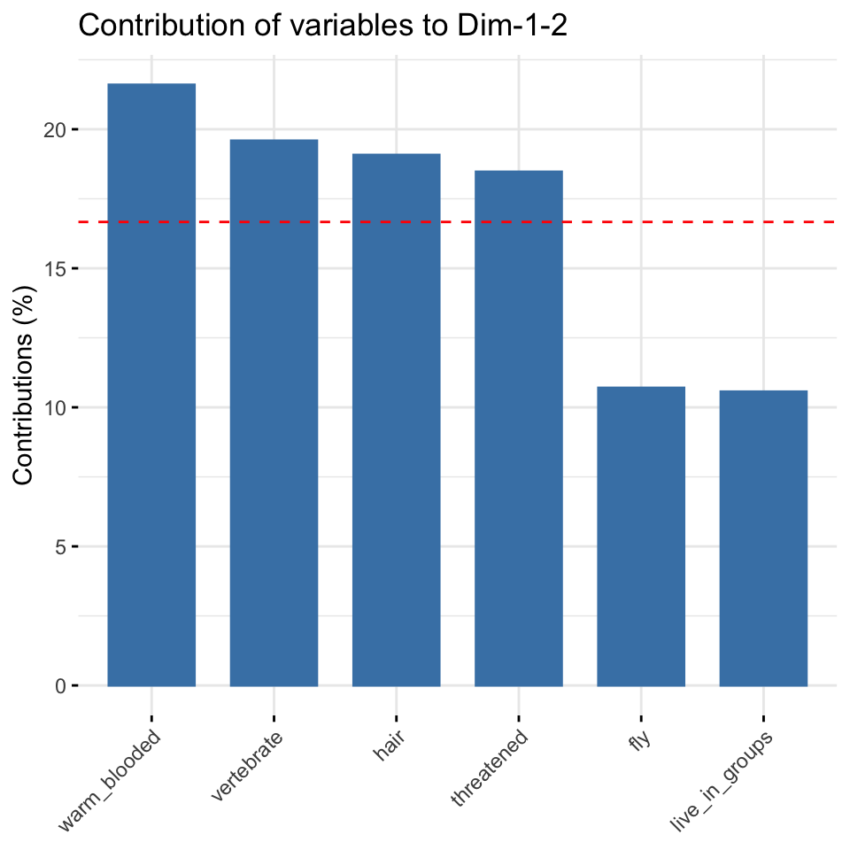
animals_df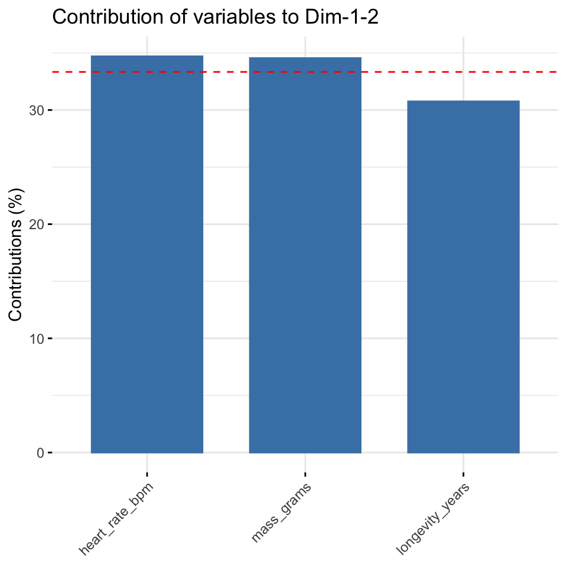
std_creature_df59.5.3 Ebene der Individuen
get_*_ind() für andere Funktionen aus FactoMineR
Du kannst einfach das * in get_*_ind() durch den klein geschriebenen Funktionaufruf von MCA, FAMD und MFA ersetzen um dir dann auch die Ergebnisse analog zu der PCA herausgeben zu lassen. Die Interpretation ist ähnlich bis gleich.
Nachdem wir uns die Informationen von den Variablen und damit die Informationen von den Spalten angeschaut haben, wollen wir uns nochmal die Informationen aus den Zeilen, also den Individuen anschauen. Auch hier können wir ja einfach mal schauen, wie die Individuen untereinander zusammenhängen. Wir arbeiten jetzt also mit den Informationen zu den einzelnen Individuen. Wir erhalten die Informationen über die Funktion get_pca_var().
ind_animals <- get_pca_ind(pca_animals)
ind_creature <- get_pca_ind(pca_creature)
ind_creaturePrincipal Component Analysis Results for individuals
===================================================
Name Description
1 "$coord" "Coordinates for the individuals"
2 "$cos2" "Cos2 for the individuals"
3 "$contrib" "contributions of the individuals"Nachdem wir die Informationen zu den Individuen extrahiert haben, können wir uns die Koordinaten der einzelnen Individuen, die sich aus der Varianz/Kovarianzmatrix der Individuen ergeben, einmal in der Abbildung 59.12 anschauen. Wir interpretieren die cos2-Werte analog zu den Variablen. Das heißt, cos2-Werte geben an, wie bedeutend ein Individuum für die beiden Hauptkomponenten Dim.1 und Dim.2 ist. Wie sehen bei den Tierdaten, dass der Hering nichts zur Aufspaltung der Daten beiträgt. Die Tiere die weiter Außen liegen, haben mehr Informationen. Bei den Kreaturendaten sehen wir klar, dass der Hamster und der Wal nicht zu den anderen Tieren passen will. Beide Tiere pressen förmlich die anderen Tiere in den unteren linken Quadranten zusammen.
fviz_pca_ind(pca_animals,
col.ind = "cos2",
gradient.cols = c("#00AFBB", "#E7B800", "#FC4E07"),
repel = TRUE) +
scale_x_continuous(expand = expansion(add = c(0.5, 1))) +
scale_y_continuous(expand = expansion(add = c(0.5, 0.5)))
fviz_pca_ind(pca_creature,
col.ind = "cos2",
gradient.cols = c("#00AFBB", "#E7B800", "#FC4E07"),
repel = TRUE) +
scale_x_continuous(expand = expansion(add = c(0.5, 1))) +
scale_y_continuous(expand = expansion(add = c(0.5, 0.5))) 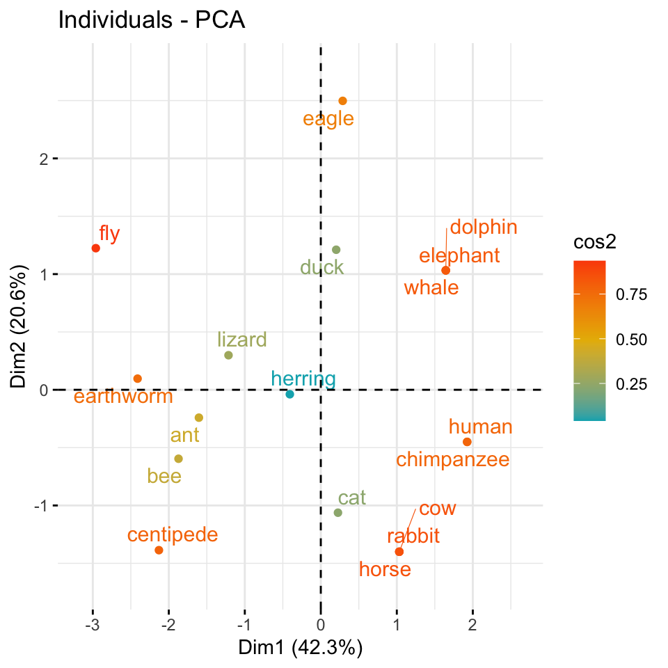
animals_df
std_creature_dfWir können uns dann auch recht schnelle einmal die meisten bedeutenden Individuen für die ersten beiden Hauptkomponenten numerisch in der Abbildung 59.13 ansehen. Achtung, wir haben hier einige Individuen entfernt, die fehlende Werte in den Zeielne hatten. Da hätten wir vorher mal reagieren sollen, aber wir machen hier ja keine Imputation von fehlenden Werten. Die rote gestrichelte Linie zeigt den erwarteten durchschnittlichen Beitrag an. Wäre der Beitrag der Variablen gleichmäßig, wäre der erwartete Wert \(1/n_{ind}\). Für die ersten beiden Hauptkomponenten kann ein Individuum mit einem Beitrag, der über diesem Grenzwert liegt, als wichtig angesehen werden.
Auch hier sehen wir, dass die Fliege und der Tausendfüßler den größten Einfluss haben. Bei den Kreaturendaten ist es noch auffälliger, da liegt die gesamte Information der Daten in dem Wal und dem Hamster. Der Rest der Daten ist dagegen recht homogen. Hier siehst du auch, wie man die Hauptkomponentenanalyse zum Detektieren von Ausreißern nutzen kannst.
fviz_contrib(pca_animals, choice = "ind", axes = 1:2)
fviz_contrib(pca_creature, choice = "ind", axes = 1:2)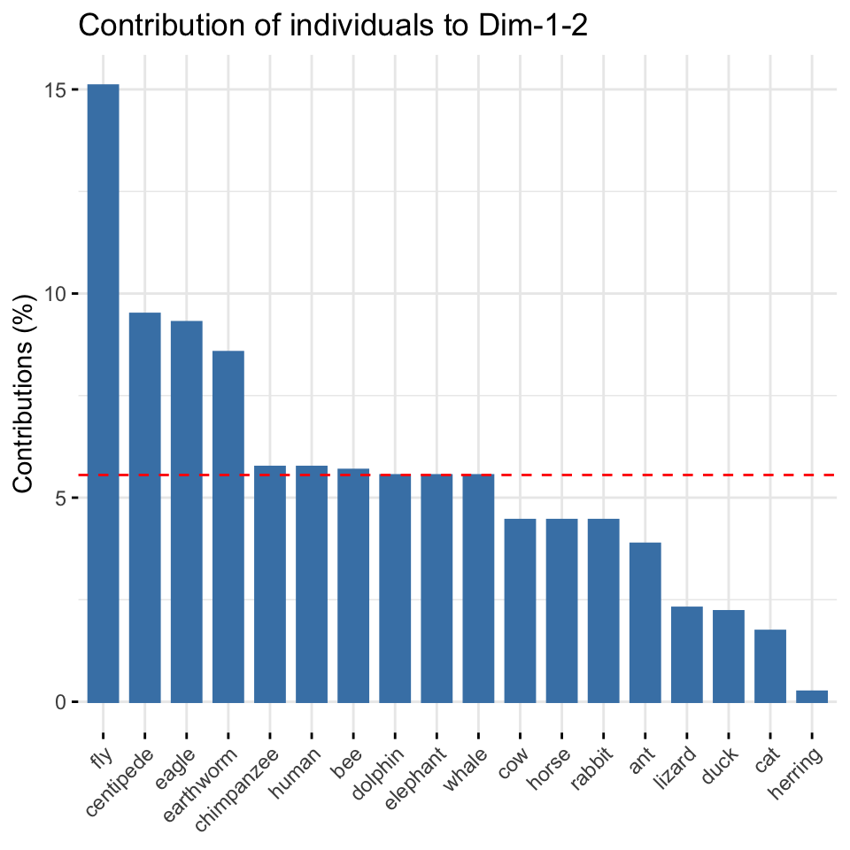
animals_df
std_creature_dfWie schon bei den Variablen können wir auch über das Koordinatensystem der Individuen Gruppen bilden. Wir rechnen auch hier eine Clusteranalyse mit der Funktion kmeans(). Wie auch schon vorab, kannst du auch hier dir einen anderen Clusteralgorithmus auswählen um die Gruppen zu bilden. Wir bleiben hier aber bei einem k-NN Algorithmus der uns einen Faktor mit der Gruppenzugehörigkeit wiedergibt.
grp_animal_ind <- kmeans(ind_animals$coord, centers = 3, nstart = 25) %>%
pluck("cluster") %>%
as_factor()Das Ganze dann auch nochmal für den Kreaturendatensatz. Hier können wir dann wiederum mehr als zwei Cluster wählen, da wir ja sehr viele Individuen haben, die wir in Gruppen einteilen können. Die Anzahl an Gruppen ist hier mit k = 4 eher zufällig gewählt.
grp_creature_ind <- kmeans(ind_creature$coord, centers = 4, nstart = 25) %>%
pluck("cluster") %>%
as_factor()In der Abbildung 59.14 siehst du die Gruppen aus dm k-NN Algorithmus eingefärbt und Ellipsen um die Gruppen gezeichnet. Mit der Option ellipse.type = "confidence" kannst du dir auch Ellipsen mit dem Konfidenzbereich anzeigen lassen. Wir bleiben hier aber mal bei dem Standard der Funktion, der auch sonst genutzt wird. Ich habe mich dann noch dazu entschieden den Mittelpunkt der Ellipse mit mean.point = FALSE nicht anzeigen zu lassen. Wir können auch das geom.ind zu text ändern, dann werden nicht die Punkte sondern die Label der Individuen angezeigt.
fviz_pca_ind(pca_animals,
geom.ind = "point",
col.ind = grp_animal_ind,
palette = c("#00AFBB", "#E7B800", "#FC4E07"),
addEllipses = TRUE,
legend.title = "Groups", mean.point = FALSE)
fviz_pca_ind(pca_creature,
geom.ind = "point",
col.ind = grp_creature_ind,
palette = c("#F0E442", "#0072B2", "#D55E00", "#CC79A7"),
addEllipses = TRUE,
legend.title = "Groups", mean.point = FALSE)
animals_df
std_creature_dfTja, sieht dann etwas wild aus. Aber da musst du dann eben mit der Anzahl der Gruppen aus dem k-NN Algorithmus spielen. Auch siehst du, dass einzelne extreme Beobachtungen dir alles zunichte machen können. Hier müsste man überlegen, ob nicht der Wal und der Hamster bei den Kreaturendaten nicht eins zu viel sind. Jetzt stehen wir vor der Frage, passt das so? Was sind den die einzelnen Punkt für Beobachtungen? Da hilft uns dann die Funktion fviz_pca_biplot() weiter. Nicht alle Methoden der Hauptkomponentenanalyse können auch einen Biplot generieren, aber wenn, dann ist der Biplot sehr nützlich. In der Abbildung 59.15 siehst du den Biplot für die Tierdaten sowie für die Kreaturendaten sowie die Clusterinformationen ergänzt.
fviz_pca_biplot(pca_animals,
col.ind = grp_animal_ind,
col.var = grp_animal_var,
addEllipses = TRUE,
palette = "jco",
label = c("var", "ind"),
repel = TRUE,
legend.title = "Species", mean.point = FALSE) +
theme(legend.position = "none") +
scale_fill_manual(values = c("#E69F00", "#56B4E9", "#009E73"))
fviz_pca_biplot(pca_creature,
col.ind = grp_creature_ind,
col.var = grp_creature_var,
addEllipses = TRUE,
label = c("var", "ind"),
repel = TRUE,
legend.title = "Species", mean.point = FALSE) +
theme(legend.position = "none") +
scale_fill_manual(values = c("#F0E442", "#0072B2", "#D55E00", "#CC79A7"))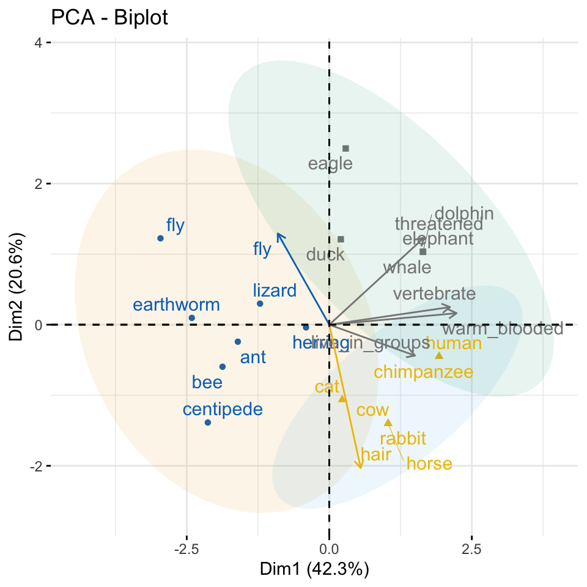
animals_df
std_creature_dfBei den Tierdaten passe es eigentlich ganz gut mit den Clustern, aber die Inhalte machen teilweise nicht so viel Sinn. Wir haben Tiere zusammen gruppiert, die eigentlich nicht so richtig zusammen passsen. Zwar sind in der einen Gruppe die Insekten aber der Elefant ist zusammen mit dem Wal, dem Delphin und dem Adler sowie der Ente gruppiert. Da reichen anscheinend die Daten und Variablen noch nicht aus um hier eine gute Trennung hinzukriegen. Immerhin passt es auch mit den Säugetieren. Du siehst hier auch gut, wie die Vektoren in die Richtung der passenden Individuen zeigen. So sind die haarigen Individuen dann unten rechts. Das passt ganz gut. Bei den Kreaturendaten siehst du auch schön, wie der Wal die Variable mass_grams nach oben rechst zu sich zieht. Auch die Variable der Lebendauer zieht den Elefanten und den Menschen nach rechts weg.
59.6 Multi Dimensional Scaling (MDS)
Eine besondere Form der Hauptkomponentenanalyse ist das Multidimensional Scaling (abk. MDS). Im Prinzip sind die Mechanismen sehr ähnlich. Der Hauptunterschied ist aber, das wir für die MDS eine Distanzmatrix benötigen. Wir können dafür die Funktion dist() oder as.dist() nehmen, wenn wir schon Distanzen vorliegen haben. Nehmen wir als plakatives Beispiel einmal die Distanzen von europäischen Städten zueinander. Wir haben die Daten in der Exceldatei distance.xlsx vorliegen. Wir lesen die Daten einmal ein und schauen uns die ersten fünf Spalten und die ersten fünf Zeilen des Datensatzes einmal an.
distance_tbl <- read_excel("data/distance.xlsx")
distance_tbl[1:5, 1:5]# A tibble: 5 × 5
city Amsterdam Antwerp Athens Barcelona
<chr> <dbl> <dbl> <dbl> <dbl>
1 Amsterdam 0 160 3082 1639
2 Antwerp 160 0 2766 1465
3 Athens 3082 2766 0 3312
4 Barcelona 1639 1465 3312 0
5 Berlin 649 723 2552 1899Wenn wir jetzt auf diesem Datensatz jetzt ein MDS rechnen wollen, dann müssen wir zum einen alle Spalten mit einem character entfernen. Wir haben dann nur noch einen Datensatz bzw. Datenmatrix mit den Distanzen vorliegen. Dann kann wir das tibble in einen dist-Objekt mit der Funktion as.dist() umwandeln. Die eigentliche Berechnung für das Multidimensional Scaling findet in der Funktion cmdscale() statt. Mit der Option k = 2 legen wir fest, dass wir nur zwei Hauptkomponenten bzw. Dimensionen bestimmen wollen. Wir machen also aus unserem 37x37 großen Datenmatrix durch Multidimensional Scaling eine Reduktion auf zwei Dimensionen bzw. Spalten.
mds <- distance_tbl %>%
select(-city) %>%
as.dist() %>%
cmdscale(k = 2) %>%
as_tibble() %>%
mutate(V1 = -V1,
V2 = -V2)
colnames(mds) <- c("Dim.1", "Dim.2")In Abbildung 59.16 sehen wir das Ergebnis der Dimensionsreduktion auf zwei Dimensionen. Wir erhalten die Zusammenhänge bzw. Distanzen aus der Datenmatrix in einem Scatterplot. Ein Scatterplot ist ja nichts anders als die Darstellung von zwei Dimensionen. Wie wir sehen können nimmt die Anordnung der Orte in etwa die Positionen von den Orten auf der Landkarte in Europa ein. Natürlich stimmen die Relationen nicht perfekt, aber das Abbild ist schon recht nahe dran. Wir können also auf diese Art und Weise auch Ausreißer bestimmen.
ggscatter(mds, x = "Dim.1", y = "Dim.2",
label = distance_tbl$city,
size = 1,
repel = TRUE)
Wenn wir keine Distanzmatrix wie im obigen Beispiel zu den Entfernungen der europäischen Städte vorliegen haben, dann können wir uns die Distanzen auch mit der Funktion dist() berechnen lassen. Wir nutzen jetzt mal als Echtdaten die Daten der Gummibärchen. Mal sehen, ob wir hier irgendwelche Gruppen erkennen. Die Hilfeseite der Funktion ?dist zeigt welche mathematischen Distanzmaße wir auf die Daten anwenden können. In unseren Fall berechnen wir die euklidische Distanz zwischen den Beobachtungen. Dann rufen wir über die Funkion cmdsscale das Multidimensional Scaling auf.
mds <- animals_df %>%
dist(method = "euclidean") %>%
cmdscale(k = 2) %>%
as_tibble() %>%
set_names(c("Dim.1", "Dim.2"))Das Ergebnis des Multidimensional Scaling hat keine Bedeutung für uns. Wir können die Zahlen nicht interpretieren. Was wir können ist das Ergebnis in einem Scatterplot wie in Abbildung 59.17 zu visualisieren.
ggscatter(mds, x = "Dim.1", y = "Dim.2",
label = rownames(animals_df),
size = 1,
repel = TRUE)
Zum einen Spalten sich die Tiere sehr gut auf. Wir sehen hier auch, welche Tiere eher nahe beieinander liegen und welche Tiere eher artfremd sind. Manche Tiere sind dann etwas seltsam, wie zum Beispiel der Adler und der Elefant, die nah beieinander liegen. Aber es gibt auf der anderen Seite auch nicht so viele Vögel in den Daten. Beachte immer, alle Beobachtungen werden auch abgebildet. Es gibt kein, passt dann doch nicht.
Wie schon bei der Hauptkomponentenanalyse können wir uns auch das \(k\)-NN Verfahren aus dem Kapitel 67 nutzen um Cluster in den Daten zu finden. Das heißt wir nutzen das maschinelle Lernverfahren \(k-NN\) um uns \(k\) Cluster bestimmen zu lassen. Dafür nutzen wir die Funktion kmeans() und ziehen uns über die Funktion pluck() die Cluster raus. Daher erhalten wir einen Vektor mit Zahlen, die beschreiben in welchem Cluster die jeweilige \(i\)-te Beobachtung ist.
# K-means clustering
clust <- kmeans(mds, centers = 3) %>%
pluck("cluster") %>%
as.factor()Wir wollen jetzt unser MDS Ergebnis von den Gummibärchen um eine Spalte für die Clusterergebnisse von \(k\)-NN ergänzen.
mds <- mds %>%
mutate(groups = clust)Nun sehen in Abbildung 59.18 die gleiche Abbildung wie oben nur ergänzt um die farbliche Hinterlegung der \(k=3\) Clustern aus dem \(k\)-NN Algorithmus. Hier hängt es wieder stark von der Anzahl an Clustern ab. Wenn du mal spielst, wirst du sehen, dass bei vier Clustern dann auch der gelbe Großcluster aufgebrochen wird. Es sind eben dann doch recht wenig Tiere von jeder Art um hier eine saubere Zuordnung zu kriegen.
ggscatter(mds, x = "Dim.1", y = "Dim.2",
label = rownames(animals_df),
color = "groups",
palette = "jco",
size = 1,
ellipse = TRUE,
ellipse.type = "convex",
repel = TRUE)
59.7 Diskriminanzanalyse
Die Diskriminanzanalyse (DA) ist eine multivariate Klassifizierungstechnik, die Beobachtungen auf der Grundlage messbarer Merkmale dieser Beobachtungen in zwei oder mehr sich gegenseitig ausschließende Gruppen einteilt. Diese Merkmale nennen wir dann gerne auch Variablen oder aber die Spalten unseres Datensatzes. Die Diskriminanzanalyse unterscheidet sich von der Regressionsanalyse dadurch, dass die abhängige Variable \(y\) diskret sein muss. Die Diskriminanzanalyse unterscheidet sich von der Clusteranalyse dadurch, dass die Klassen im Voraus bekannt sein müssen, um das Modell zu erstellen. Faktisch ist es schon alles was du wissen musst. Wir werden jetzt mal schauen, ob wir einen Datensatz, der schon Klassen bzw. Gruppen hat anhand der Diskriminanzanalyse besser verstehen können.
Weitere Tutorien für die Diskriminanzanalyse
Wie immer gibt es eine Vielzahl an tollen Tutorien, die die Diskriminanzanalyse gut erklären. Ich habe hier einmal eine Auswahl zusammengestellt und du kannst dich da ja mal vertiefend mit beschäftigen, wenn du willst. Teile der Tutorien findest du vermutlich hier im Kapitel wieder.
- Eine gute Übersicht als Tutorim Discriminant Analysis Essentials in R
- Einmal das erste Tutorium mit dem Namen Discriminant Analysis in R
- Und einmal das zweite Tutorium mit dem selben Namen Discriminant Analysis in R
Als Beispiel nutze ich einen Datensatz aus dem R Paket HDclassif und zwar den Datensatz wine auch bekannt vom UC Irvine Machine Learning Repository - Wine Dataset. Wie immer von mir leicht im Folgenden modifiziert. Wir haben hier drei Sorten von Wein class vorliegen, die wir anhand von verschiedenen Eigenschaften des Weins beschrieben haben. Welche dieser Eigenschaften hat einen Einfluss auf die Sorte des Weins? Das wollen wir uns jetzt einmal anschauen. Zuerst laden wir einmal die Daten.
Eine detailierte Auswertung des Datensatzes kann auch bei dem Tutorium Analysis of White Wine Quality Dataset nachvollzogen werden.
data(wine)Wir müssen noch etwas an den Daten rumspielen und die Namen richtig kriegen. Die Namen fehlen leider in dem Datensatz und ich habe mir die nochmal rausgesucht und zusammen kopiert. Dann müssen wir die Spalten noch in saubere Namen umwandeln und die Klassenvariable class in einen Faktor umwandeln.
wine_tbl <- wine %>%
set_names(c("Class", "Alcohol", "Malic acid", "Ash", "Alcalinity of ash", "Magnesium", "Total phenols",
"Flavanoids", "Nonflavanoid phenols", "Proanthocyanins", "Color intensity", "Hue",
"OD280/OD315 of diluted wines", "Proline")) %>%
clean_names() %>%
mutate(class = as_factor(class))Dann einmal ein schneller Blick auf die Daten. Wir werden hier die Daten nicht standardisieren, obwohl es sicherlich Sinn macht das zu tun. Aber dann wird das hier alles noch länger als sowieso schon. Du musst dir ja bei jeder Variable überlegen, ob es eine kategorielle Variable ist oder nicht. Wir können die Diskriminanzanalyse aber auch ohne eine Standardisierung oder Normalisierung gut durchführen.
| class | alcohol | malic_acid | ash | alcalinity_of_ash | magnesium | total_phenols | flavanoids | nonflavanoid_phenols | proanthocyanins | color_intensity | hue | od280_od315_of_diluted_wines | proline |
|---|---|---|---|---|---|---|---|---|---|---|---|---|---|
| 1 | 14.23 | 1.71 | 2.43 | 15.6 | 127 | 2.80 | 3.06 | 0.28 | 2.29 | 5.64 | 1.04 | 3.92 | 1065 |
| 1 | 13.20 | 1.78 | 2.14 | 11.2 | 100 | 2.65 | 2.76 | 0.26 | 1.28 | 4.38 | 1.05 | 3.40 | 1050 |
| 1 | 13.16 | 2.36 | 2.67 | 18.6 | 101 | 2.80 | 3.24 | 0.30 | 2.81 | 5.68 | 1.03 | 3.17 | 1185 |
| 1 | 14.37 | 1.95 | 2.50 | 16.8 | 113 | 3.85 | 3.49 | 0.24 | 2.18 | 7.80 | 0.86 | 3.45 | 1480 |
| 1 | 13.24 | 2.59 | 2.87 | 21.0 | 118 | 2.80 | 2.69 | 0.39 | 1.82 | 4.32 | 1.04 | 2.93 | 735 |
| 1 | 14.20 | 1.76 | 2.45 | 15.2 | 112 | 3.27 | 3.39 | 0.34 | 1.97 | 6.75 | 1.05 | 2.85 | 1450 |
| 1 | 14.39 | 1.87 | 2.45 | 14.6 | 96 | 2.50 | 2.52 | 0.30 | 1.98 | 5.25 | 1.02 | 3.58 | 1290 |
In diesem Abschnitt gehe ich auf die volle Breite der Diskriminanzanalyse einmal ein. Zwar nicht in die Tiefe aber dafür in der Breite werde ich die folgenden Methoden der Diskriminanzanalyse vorstellen:
- Lineare Diskriminanzanalyse (LDA): Verwendet die Linearkombinationen von den Variablen zur Vorhersage der Klasse einer gegebenen Beobachtung. Es wird davon ausgegangen, dass die Variablen (\(p\)) normal verteilt sind und die Klassen identische Varianzen oder identische Kovarianzmatrizen haben. Also alle approximativ Varianzhomogen sind.
- Quadratische Diskriminanzanalyse (QDA): ist flexibler als die LDA. Hier gibt es keine Annahme, dass die Kovarianzmatrix der Klassen gleich ist. Wir können also auch mit Varianzheterogenität umgehen.
- Mischungsdiskriminanzanalyse (MDA): Wir nehmen an, dass jede Klasse eine Gaußsche Mischung von Unterklassen ist. Das heißt, unsere Daten setzen sich aus verschiedenen Normalverteilungen je Klasse zusammen.
- Flexible Diskriminanzanalyse (FDA): Es werden nichtlineare Kombinationen von Variablen verwendet, wie z. B. Splines oder nicht-lineare Geraden.
- Regulierte Diskriminanzanalyse (RDA): Die Regularisierung oder auch Schrumpfung verbessert die Schätzung der Kovarianzmatrizen in Situationen, in denen die Anzahl der Variablen größer ist als die Anzahl der Stichproben in den Daten. Dies führt zu einer Verbesserung der Diskriminanzanalyse.
Wir egehn jetzt alle Methoden einmal durch. Bitte melde dich mal, wenn du in diesem Bereich was machst, dann würde ich mich über eine Diskussion der praktischen Anwendung wirklich freuen.
59.7.1 Lineare Diskriminanzanalyse (LDA)
Beginnen wir also mit der linearen Diskriminanzanalyse (eng. Linear discriminant analysis). Wir versuchen dabei die vordefinierten Klassen anhand der Variablen in den Spalten durch Linien voneinander zu trennen. In der Abbildung 59.19 sehen wir einmal das Prinzip. Als schwarze Zahlen sind die Sorten der Weine angeben. Die Flächen bilden die Zuordnung der der linearen Diskriminanzanalyse ab. Daher werden die roten Zahlen falsch klassifiziert. Wir nennen den Vorgang linear, da wir lineare Abtrennungen durch Linien durchführen und keine Bögen erlauben.
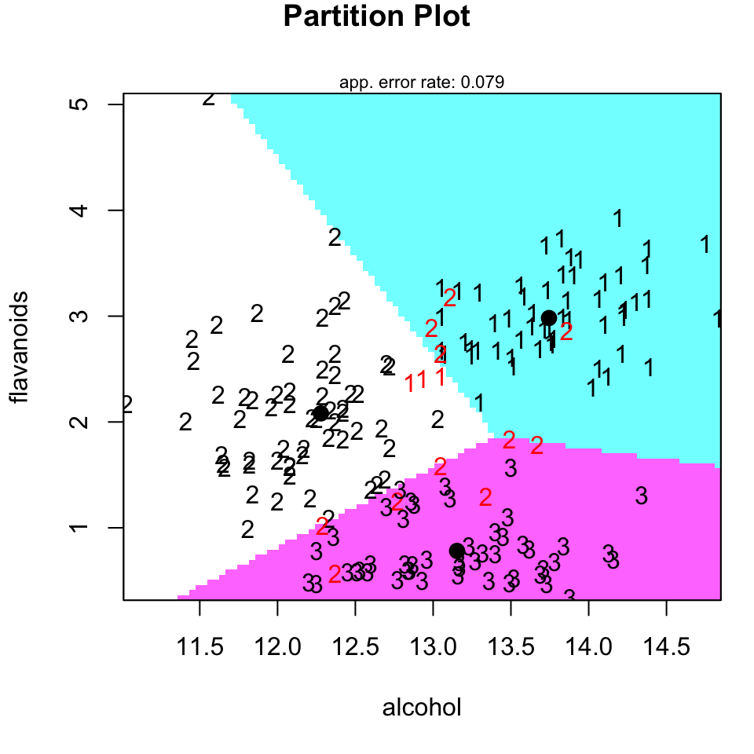
wine Datensatz. Die roten Zahlen sind die falsch von Algorithmus klassifizierten Weinsorten.Wir können die lineare Diskriminanzanalyse mit der Funktion lda() aus dem R Paket MASS durchführen. Der lda() Auffruf ist nicht anders als alle anderen Formelaufrufe anderer Funktionen auch.
wine_lda <- lda(class ~ ., data = wine_tbl)
wine_ldaCall:
lda(class ~ ., data = wine_tbl)
Prior probabilities of groups:
1 2 3
0.3314607 0.3988764 0.2696629
Group means:
alcohol malic_acid ash alcalinity_of_ash magnesium total_phenols
1 13.74475 2.010678 2.455593 17.03729 106.3390 2.840169
2 12.27873 1.932676 2.244789 20.23803 94.5493 2.258873
3 13.15375 3.333750 2.437083 21.41667 99.3125 1.678750
flavanoids nonflavanoid_phenols proanthocyanins color_intensity hue
1 2.9823729 0.290000 1.899322 5.528305 1.0620339
2 2.0808451 0.363662 1.630282 3.086620 1.0562817
3 0.7814583 0.447500 1.153542 7.396250 0.6827083
od280_od315_of_diluted_wines proline
1 3.157797 1115.7119
2 2.785352 519.5070
3 1.683542 629.8958
Coefficients of linear discriminants:
LD1 LD2
alcohol -0.403399781 0.8717930699
malic_acid 0.165254596 0.3053797325
ash -0.369075256 2.3458497486
alcalinity_of_ash 0.154797889 -0.1463807654
magnesium -0.002163496 -0.0004627565
total_phenols 0.618052068 -0.0322128171
flavanoids -1.661191235 -0.4919980543
nonflavanoid_phenols -1.495818440 -1.6309537953
proanthocyanins 0.134092628 -0.3070875776
color_intensity 0.355055710 0.2532306865
hue -0.818036073 -1.5156344987
od280_od315_of_diluted_wines -1.157559376 0.0511839665
proline -0.002691206 0.0028529846
Proportion of trace:
LD1 LD2
0.6875 0.3125 Die lineare Diskriminanzanalyse ermittelt nun die Gruppenmittelwerte und berechnet für jedes Individuum die Wahrscheinlichkeit, zu den verschiedenen Weinsorten oder besser allgemeiner den Klassen zu gehören. Das Individuum wird dann der Gruppe mit dem höchsten Wahrscheinlichkeitswert zugeordnet. Die Ausgaben von lda() enthalten die folgenden Elemente:
Prior probabilities of groups: der Anteil der Beobachtungen in jeder Gruppe. Zum Beispiel befinden sich 33% der Beobachtungen in der Gruppe mit der Sorte 1.Group means: Die Gruppenschwerpunkt und zeigen damit den Mittelwert jeder Variable in jeder Gruppe.Coefficients of linear discriminants: Zeigt die lineare Kombination von Prädiktorvariablen, die zur Bildung der LDA-Entscheidungsregel verwendet werden. Hier ist wichtig, dass die Variablen mit einem hohen absoluten Wert den meisten Anteil haben die Klassen voneinander zu trennen.Proportions of trace: Beschreibt den Anteil der Varianz zwischen den Klassen, der durch aufeinanderfolgende Diskriminanzfunktionen erklärt wird.
Mit der Funktion partimat() können wir uns die Zusammenhänge für einzelne Variablenkombinationen ansehen, vielleicht wird dann einiges klarer. Es empfiehlt sich immer die Variablen zu nehmen, die den größten Betrag in der ersten Diskriminanten (LD1) haben. In unserem Fall sind das dann flavanoids sowie nonflavanoid_phenols und od280_od315_of_diluted_wines die wir uns nochmal paarweise anschauen. Ich kann das leider hier nicht im Skript machen, da leider die entstehende Abbildungen dann leider hier die Ausgabe zerreißen. Das Paket hat eben doch schon ein paar Jahre auf dem Buckel und ist nicht mehr so kompatibel und ich ahbe leider nicht die Zeit es nochmal in ggplot schön zu machen. Die Informationen sind ja alle da.
partimat(class ~ flavanoids + od280_od315_of_diluted_wines + nonflavanoid_phenols, data = wine_tbl, method = "lda")Im Weiteren können wir uns auch die Klassen vorhersagen lassen die sich aus dem Modell der lineare Diskriminanzanalyse ergeben würden. Dafür nutzen wir dann die Funktion predict() und stecken einfach nochmal die Daten in die Funktion. Dann müssen wir noch etwas aufräumen, damit wir einen schönen Datensatz wiederbekommen.
wine_lda_pred_tbl <- predict(wine_lda) %>%
reduce(bind_cols) %>%
set_names(c("class", "pred_1", "pred_2", "pred_3", "ld1", "ld2"))Wir können jetzt den Datensatz nutzen um einmal zu schauen, ob wir in der Lage waren über die lineare Diskriminanzanalyse unsere Klassen sauber aufzutrennen. Wir stellen auf der \(x\)-Achse und der \(y\)-Achse dann die Diskriminaten LD1 und LD2 dar. Unsere Klassen sind dann nach der vorhergesagten Klassenzugehörigkeit gelabelt. Wir sehen das Ergebnis dann in der Abbildung 59.20.
wine_lda_pred_tbl %>%
ggplot(aes(ld1, ld2, label = class, color = class)) +
theme_bw() +
geom_text() +
scale_color_okabeito()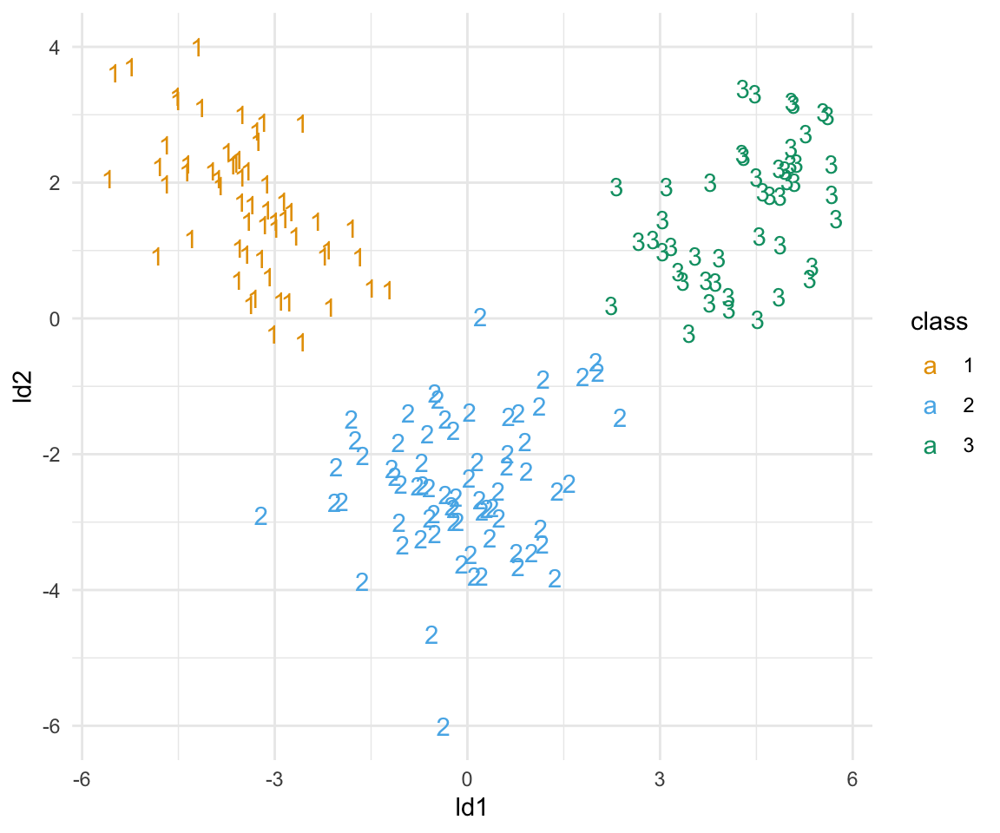
Jetzt schauen wir noch nach wie akkurat unsere Einteilung wirklich war. Wie viel Prozent der Klassen aus unserem originalen Datensatz können wir mit dem Modell der linearen Diskriminanzanalyse richtig vorhersagen?
mean(wine_lda_pred_tbl$class == wine_tbl$class)[1] 1Perfekt, wir können alle Sorten richtig zuordnen. Wir haben ein wunderbares Modell gefunden mit dem wir zukünftige Weinsorten in die drei Klassen einordnen können.
59.7.2 Quadratische Diskriminanzanalyse (QDA)
Als nächstes schauen wir kurz auf die quadratische Diskriminanzanalyse (eng. Quadratic discriminant analysis ). Wir gehen hier jetzt nicht nochmal alles im Detail durch. Hier wiederholt sich dann vieles aus der linearen Diskriminanzanalyse.
wine_qda <- qda(class ~ ., data = wine_tbl)Wir erhalten auch wieder die Vorhersagen und damit ein Maß für unsere Güte der KLassenzuordnung über die Funktion predict(). Leider ist es so, dass wir nicht die Informationen über die Diskriminanten erhalten. Daher können wir auch keine Abbildung der Prädiktion zeigen.
wine_qda_pred_tbl <- predict(wine_qda) %>%
reduce(bind_cols) %>%
set_names(c("class", "pred_1", "pred_2", "pred_3"))Das einzige was hier jetzt erstmal bleibt, ist darauf zu schauen, wie akkurat unsere Vorhersage war. Wie viele von den Sorten sagen wir richtig vorher?
mean(wine_qda_pred_tbl$class == wine_tbl$class)[1] 0.994382Hier sind wir dann etwas schlecht als bei der linearen Diskriminanzanalyse.
59.7.3 Mischungsdiskriminanzanalyse (MDA)
Für die Mischungsdiskriminanzanalyse (eng. Mixture discriminant analysis) wechseln wir dann das Paket zu mda. Hier können wir uns dann auch wieder die Ergebnisse ausgeben lassen. Wir immer sieht das wieder anders aus, da wir das Paket gewechselt haben.
wine_mda <- mda(class ~ ., data = wine_tbl)
wine_mdaCall:
mda(formula = class ~ ., data = wine_tbl)
Dimension: 8
Percent Between-Group Variance Explained:
v1 v2 v3 v4 v5 v6 v7 v8
52.82 88.80 93.73 96.63 98.35 99.58 99.97 100.00
Degrees of Freedom (per dimension): 14
Training Misclassification Error: 0 ( N = 178 )
Deviance: 0.349 Was wir sehen ist, dass unser Misclassification Error gleich 0 ist. Daher haben wir keine Klasse falsch zugeordnet. Das ist schon mal super. Das werden wir dann auch gleich nochmal sehen, wenn wir die Funktion predict() auf unsere Daten anwenden. Insgesamt werden dann aber acht Dimensionen geschätzt, wir werden uns aber nur die ersten beiden dann anschauen. Daher auch das [, 1:2], was die ersten beiden Spalten aus den variates auswählt.
wine_mda_pred_tbl <- lst(class = predict(wine_mda, type = "class"),
posterior = predict(wine_mda, type = "posterior"),
variates = predict(wine_mda, type = "variates")[, 1:2]) %>%
reduce(bind_cols) %>%
set_names(c("class", "pred_1", "pred_2", "pred_3", "ld1", "ld2"))In der Abbildung 59.21 sehen wir das Ergebnis der Mischungsdiskriminanzanalyse. Sieht nicht so gut aus, wie die lineare Diskriminanzanalyse, da wir hier mehr Gurppen haben, die sich überlappen. Dennoch scheinen die Sorten sauber getrennt zu werden. Dafür schauen wir uns dann nochmal die Güte der Vorhersage an.
wine_mda_pred_tbl %>%
ggplot(aes(ld1, ld2, label = class, color = class)) +
theme_bw() +
geom_text() +
scale_color_okabeito()
Spannend, wie sehen, dass wir alle Klassen richtig vorhersagen. Zwar ist die Abbildung nicht so klar wie bei der linearen Diskriminanzanalyse, aber denoch kriegen wir alle Klassen sauber vorhersagen.
mean(wine_mda_pred_tbl$class == wine_tbl$class)[1] 1Hier gehen wir nicht mehr auf die Fehlermatrix (eng. confusion matrix) ein. Was du schnell erkennst ist, dass du alle Sorten sauber und. richtig vorhersagt. In den Spalten stehen die wahren Sorten und in den Zeilen die vom Modell vorhergesagten Sorten. Wir haben da eine perfekte Übereinstimmung.
wine_mda$confusion true
predicted 1 2 3
1 59 0 0
2 0 71 0
3 0 0 48Abbhängig vom Paket ist dann die Fehlermatrix mit enthalten, manachmal musst du dir die auch selber bauen, wenn du die Matrix brauchts.
59.7.4 Flexible Diskriminanzanalyse (FDA)
Die flexible Diskriminanzanalyse (eng. Flexible Discriminant Analysis) basiert auch auf dem R Paket mda und somit haben wir ähnliche Aufrufe wie schon in der Mischungsdiskriminanzanalyse. Da wir hier nur zwei Dimensionen vorhersagen, haben wir es gleich einfach bei der Abbildung.
wine_fda <- fda(class ~ ., data = wine_tbl)Wir bauen uns dann wieder unseren Vorhersagedatensatz zusammen und wollen dann einmal die Vorhersage visualisieren.
wine_fda_pred_tbl <- lst(class = predict(wine_fda, type = "class"),
posterior = predict(wine_fda, type = "posterior"),
variates = predict(wine_fda, type = "variates")) %>%
reduce(bind_cols) %>%
set_names(c("class", "pred_1", "pred_2", "pred_3", "ld1", "ld2"))In der Abbildung 59.22 siehst du die Ergebnisse der flexiblen Diskriminanzanalyse. Sieht super aus, wir haben eine perfekte Seperation.
wine_fda_pred_tbl %>%
ggplot(aes(ld1, ld2, label = class, color = class)) +
theme_bw() +
geom_text() +
scale_color_okabeito()
Auch hier einmal geschaut, was die Güte der Vorhersage aussagt. Wir sehen, dass ist dann auch perfekt. War auch zu erwarten nach der Abbildung.
mean(wine_lda_pred_tbl$class == wine_tbl$class)[1] 1Abschließend noch die Fehlermatrix, die wir frei Haus mitgeliefert kriegen.
wine_fda$confusion true
predicted 1 2 3
1 59 0 0
2 0 71 0
3 0 0 4859.7.5 Regulierte Diskriminanzanalyse (RDA)
Zum Abschluss noch die regulierte Diskriminanzanalyse (eng. Regularized discriminant anlysis) aus dem dritten R Paket klaR. Ja, wir gehen hier echt durch die Pakete durch und erhalten dann wieder eine andere Ausgabe.
wine_rda <- rda(class ~ ., data = wine_tbl)
wine_rdaCall:
rda(formula = class ~ ., data = wine_tbl)
Regularization parameters:
gamma lambda
0.9767300 0.9477272
Prior probabilities of groups:
1 2 3
0.3314607 0.3988764 0.2696629
Misclassification rate:
apparent: 27.528 %
cross-validated: 27.558 %Wir sehen vor allem, dass jetzt mal die Vorhersage nicht so super geklappt hat. Wir haben eine Fehlerrate oder Misclassification rate von 28% und damit wird mehr als ein Viertel der Sorten nicht korrekt zugeordnet. Leider haben wir auch hier keine Möglichkeit uns mal etwas anzuschauen. Wir können nur selber nochmal die Vorhersage rechnen und kommen dann vermutlich auf ähnliche Zahlen.
wine_rda_pred_tbl <- predict(wine_rda) %>%
reduce(bind_cols) %>%
set_names(c("class", "pred_1", "pred_2", "pred_3"))Am Ende rechnen wir aus, wie viel Prozent wir richtig klassifiziert haben und erreichen grob 71% was ja auch zu erwatzen war. Das ist jetzt so schlecht, dass wir in diesem Fall die regulierte Diskriminanzanalyse nicht nutzen würden.
mean(wine_rda_pred_tbl$class == wine_tbl$class)[1] 0.7247191Am Ende musst du aber schauen, wie deine Daten gut zu welcher Methode passen. Da alle Methoden sehr einfach durchzuführen sind, kannst du auch alle rechnen und schauen welche das beste Ergebnis in deinem Fall liefert.
Referenzen
Kassambara A. 2017. Practical guide to principal component methods in R: PCA, M (CA), FAMD, MFA, HCPC, factoextra. Sthda.